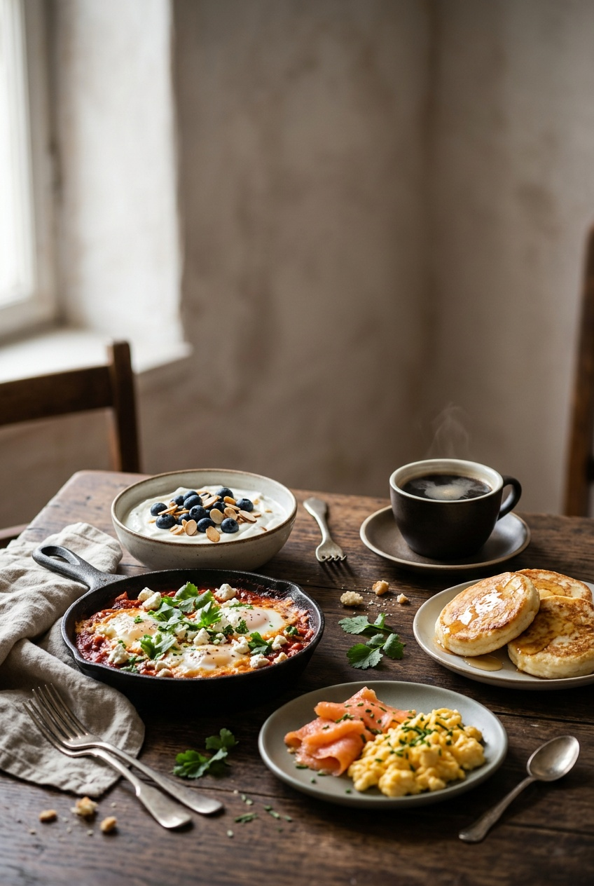
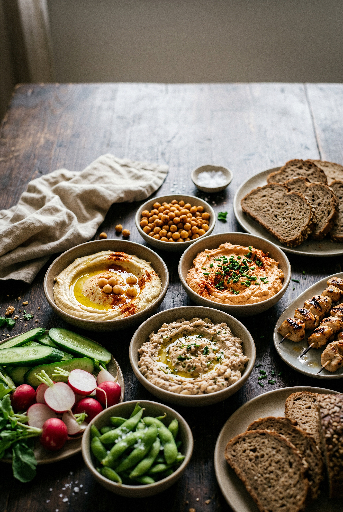
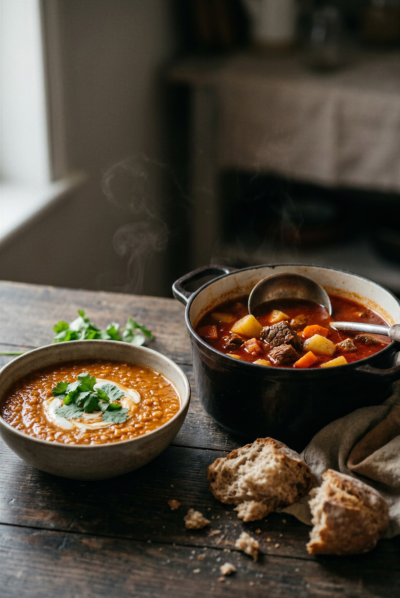
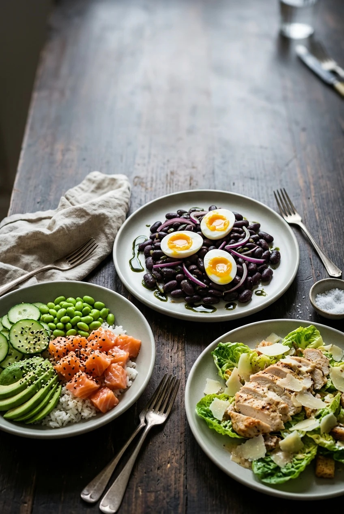
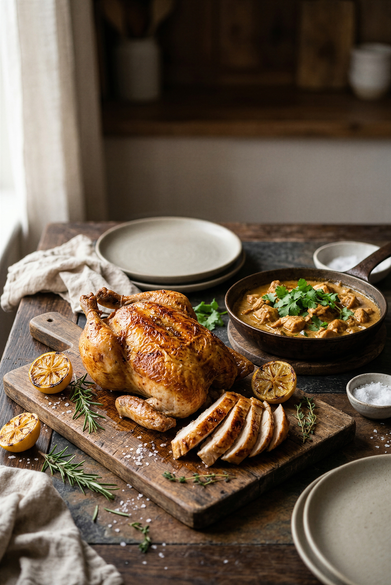
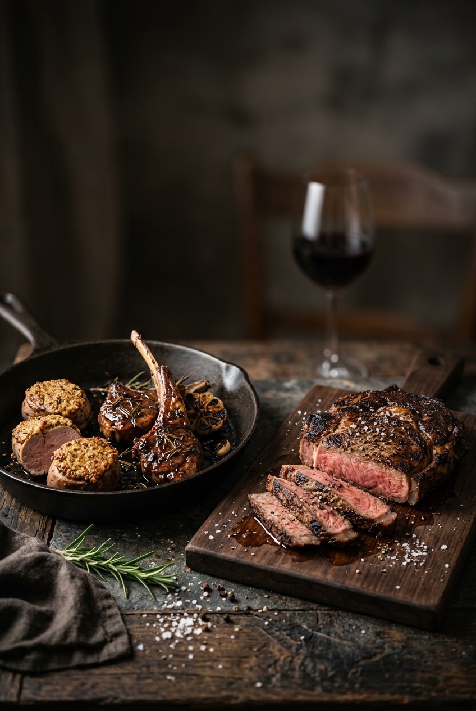
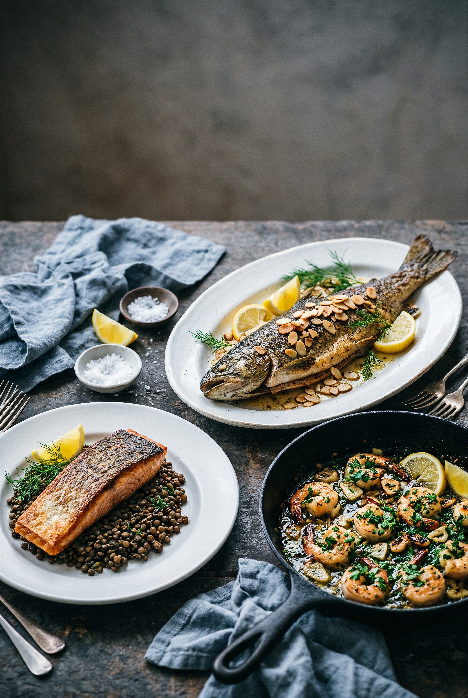
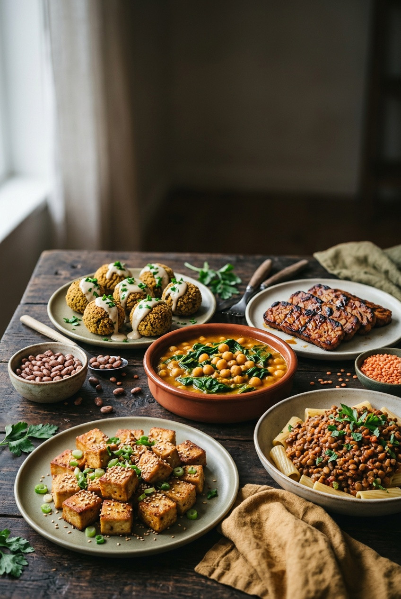
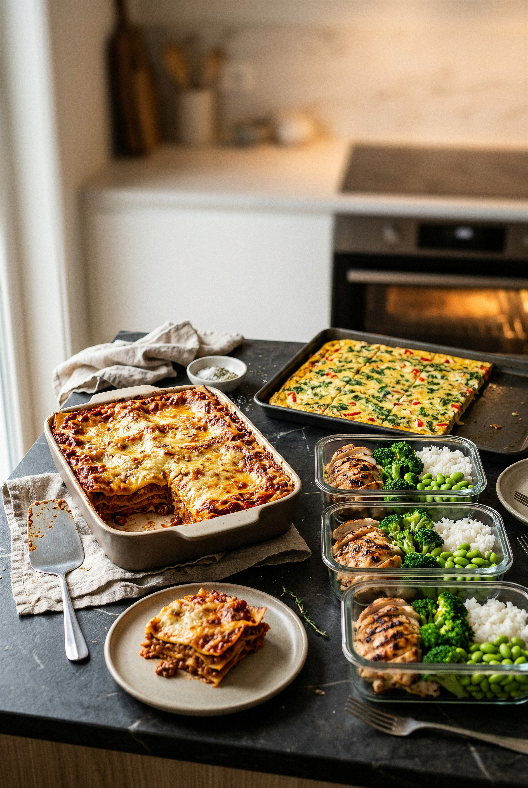

Ich bin Kurt Summer, gelernter Koch aus der schönen Steiermark in Österreich. Meine Ausbildung habe ich in der klassischen Küche gemacht, dort, wo man noch lernt, eine Sauce zu ziehen, ein Stück Fleisch richtig zu braten und aus wenigen guten Zutaten etwas Ehrliches auf den Teller zu bringen.
Danach hat mich das Meer gerufen. Viele Jahre habe ich auf Kreuzfahrtschiffen und privaten Jachten gekocht, zuletzt als Executive Chef, verantwortlich für Küchen, in denen täglich mehrere tausend Gäste versorgt werden. An Bord lernt man zwei Dinge gründlich: Man lernt, wie Gäste aus aller Welt essen wollen, und man lernt, wie man große Mengen so kocht, dass jeder Teller trotzdem schmeckt. Beides steckt in diesem Buch.
Warum ein Protein-Kochbuch? Weil ich in den letzten Jahren immer öfter gefragt wurde, wie man eiweißreich isst, ohne zum Pulver zu greifen. Die Antwort ist einfach: mit richtigem Essen. Fleisch, Fisch, Eier, Hülsenfrüchte, Milchprodukte, gut zubereitet, ehrlich gewürzt. Genau das habe ich als Koch jeden Tag gemacht, lange bevor jemand „High Protein“ auf eine Packung gedruckt hat.
Heute lebe ich wieder in der Steiermark. Ich schreibe Kochbücher, entwickle Rezepte und gebe weiter, was ich in über zwanzig Jahren in Profiküchen gelernt habe. Mein Ziel ist immer dasselbe: Dass du dich an den Herd stellst, ohne Angst, und am Ende etwas isst, das dir guttut und schmeckt.
Du wirst in diesem Buch keine Hochglanzfotos von jedem Gericht finden. Das ist Absicht. Jedes Foto, das in ein Buch gedruckt wird, macht es teurer, und ich möchte, dass sich dieses Buch jeder leisten kann. Die Rezepte sind so geschrieben, dass du sie auch ohne Bild nachkochen kannst, Schritt für Schritt, mit Zeiten, Temperaturen und den kleinen Kniffen, die in der Profiküche den Unterschied machen. Die Bilder zu Beginn jedes Kapitels sollen dir Lust machen, der Rest passiert auf deinem Teller.
Eiweiß ist der Baustein, über den gerade alle reden. Zu Recht: Protein sättigt länger als Kohlenhydrate oder Fett, es erhält die Muskulatur, wenn du abnimmst oder älter wirst, und es hilft dem Körper, sich nach Sport, Krankheit oder einem stressigen Tag zu erholen. Was mich an der ganzen Diskussion stört, ist nur, wie sie geführt wird: mit Pulvern, Riegeln und Shakes, die nach Chemie schmecken und die niemand freiwillig zum Abendessen isst.
Dieses Buch geht einen anderen Weg. Es zeigt dir, wie du mit ganz normalen Lebensmitteln auf eine ordentliche Eiweißmenge kommst, und zwar so, dass du dich darauf freust. Ein saftiges Hendl aus dem Ofen, eine Linsensuppe, die eine Mahlzeit ist, ein Skyr-Cheesecake, der am Sonntag auf dem Tisch stehen darf. Jedes Rezept in diesem Buch liefert eine klare, nachgerechnete Eiweißmenge pro Portion. Hauptgerichte bringen mindestens 25 Gramm, Frühstück, Snacks und Desserts mindestens 15 Gramm. Das sind Werte, mit denen du im Alltag arbeiten kannst.
Ich habe in meinem Berufsleben für Sportler, für Senioren, für Familien mit Kindern und für Gäste gekocht, die einfach nur gut essen wollten. Alle hatten dasselbe Problem: Eiweißreich essen klingt nach Verzicht. Es ist das Gegenteil. Richtig gemacht ist es die Küche, die am meisten sättigt und am längsten gut tut. Und genau das möchte ich dir hier beibringen, mit dem Handwerk aus der Profiküche, aber mit den Zutaten aus dem Supermarkt um die Ecke.
Alle Mengen in diesem Buch sind in Gramm, Millilitern, Esslöffeln und Teelöffeln angegeben. Ein Esslöffel entspricht etwa 15 ml, ein Teelöffel etwa 5 ml. Backofen-Temperaturen sind als Umluft angegeben. Hast du nur Ober- und Unterhitze, stell den Ofen etwa 20 °C höher ein. Formgrößen und Pfannendurchmesser stehen in Zentimetern.
Jedes Rezept nennt Portionen, Zeitaufwand, Eiweiß und Kalorien pro Portion. Die Nährwerte sind sorgfältig geschätzt, aber keine Laborwerte. Je nach Marke, Fettstufe und Größe deiner Zutaten können sie ein paar Gramm nach oben oder unten abweichen. Für die Planung deines Tages reichen sie völlig aus.
Zu jedem Rezept findest du einen kurzen Text zur Herkunft des Gerichts und am Ende einen Tipp vom Profi. Dort stehen die Dinge, die dir ein Kochkurs beibringen würde: wie du Fleisch saftig hältst, warum die Pfanne heiß sein muss, wie du ein Gericht einen Tag vorher vorbereitest. Lies den Tipp, bevor du anfängst, nicht erst, wenn etwas schiefgegangen ist.
Schärfe ist Geschmackssache. Wo Chili vorkommt, ist die Menge für eine mittlere Schärfe gedacht. Streich die Kerne heraus oder halbiere die Menge, wenn Kinder mitessen. Zum Ersetzen von Zutaten: Skyr, Magerquark und griechischer Joghurt sind in den meisten Rezepten gegeneinander austauschbar. Hähnchen und Pute auch. Wer keinen Fisch mag, nimmt bei vielen Rezepten Hähnchenbrust, wer vegetarisch isst, greift zu Tofu, Tempeh oder Hülsenfrüchten. Die Kapitel sind so gebaut, dass du immer eine Alternative findest.
Ich möchte dir eines mit auf den Weg geben: Du musst nichts perfekt machen. Wenn du das Hendl einmal zu lange im Ofen lässt, ist es trotzdem ein Abendessen. Wenn die Linsensuppe zu dick wird, kommt ein Schuss Wasser dazu. Kochen ist kein Test, es ist Übung. Jedes Rezept, das du nachkochst, macht dich besser, und das nächste geht leichter von der Hand.
Fang mit den Rezepten an, die dich anlachen. Koch sie zweimal, dann gehören sie dir. Danach wirst du anfangen, Dinge zu ändern, ein Gewürz zu tauschen, eine Beilage zu wechseln. Genau dann hast du verstanden, worum es in diesem Buch geht: nicht ums Nachkochen, sondern ums Kochenkönnen.
Eiweißreich zu essen ist keine Diät und kein Programm. Es ist eine Art zu kochen, die dich satt macht, dir Kraft gibt und die du ein Leben lang durchhalten kannst, weil sie schmeckt. Also: Pfanne raus, Ofen an, und los geht's. Ich freue mich, dass du dabei bist.

Shakshuka stammt aus Nordafrika und ist über die jüdisch-tunesische Küche nach Israel und von dort in die Frühstückscafés der ganzen Welt gewandert. Pochierte Eier in Tomatensauce, mit Bohnen und Feta verstärkt, liefern Eiweiß aus drei Quellen und brauchen nur eine Pfanne.
Zwiebel und Knoblauch fein würfeln, Paprika in 1 cm große Stücke schneiden. Olivenöl in einer großen Pfanne (28 cm) bei mittlerer Hitze erhitzen, Zwiebel und Paprika 5 Minuten anschwitzen, bis sie weich sind. Knoblauch, Kreuzkümmel, Paprikapulver und Chiliflocken zugeben und 30 Sekunden mitrösten, bis es duftet.
Tomaten, Zucker, Salz und Pfeffer einrühren. Die Sauce ohne Deckel 10–12 Minuten köcheln lassen, bis sie leicht eindickt. Abgetropfte Bohnen unterheben und 2 Minuten mit erwärmen.
Mit einem Löffel 8 Mulden in die Sauce drücken und in jede ein Ei aufschlagen. Eier leicht salzen, Deckel auflegen und bei kleiner Hitze 6–8 Minuten stocken lassen, bis das Eiweiß fest und das Eigelb noch weich ist.
Feta über die Pfanne bröseln, Petersilie grob hacken und darüberstreuen. Direkt aus der Pfanne mit geröstetem Vollkornbrot servieren.
Skyr ist ein isländisches Milchprodukt, das seit der Wikingerzeit hergestellt wird – technisch ein Frischkäse, im Löffel wie dicker Joghurt. Mit über 10 g Eiweiß pro 100 g bei kaum Fett ist er die ideale Basis für ein Frühstück, das lange satt hält.
Walnüsse und Mandeln grob hacken. Mit Kürbiskernen und Haferflocken in einer trockenen Pfanne bei mittlerer Hitze 4–5 Minuten rösten, dabei öfter rühren, bis alles duftet und leicht bräunt. Zimt und Salz zugeben, auf einen Teller geben und abkühlen lassen.
Skyr mit Milch, Honig und Vanille in einer Schüssel glatt rühren. Ist der Skyr sehr fest, mit 1–2 EL mehr Milch cremiger machen.
TK-Beeren 5 Minuten bei Zimmertemperatur antauen lassen; frische Beeren waschen und größere Früchte halbieren.
Skyr auf vier Schalen verteilen, Beeren darauf anrichten und die geröstete Nussmischung darüberstreuen. Nach Belieben mit etwas Honig beträufeln.
Pfannkuchen aus Quark oder Hüttenkäse haben in Osteuropa als Syrniki eine lange Tradition. Unsere Variante ersetzt das Mehl durch Haferflocken und wird so zum eiweißreichen Frühstück, das trotzdem nach Pfannkuchen schmeckt.
Hüttenkäse, Eier, Honig, Vanille und Zitronenabrieb mit dem Stabmixer 30 Sekunden pürieren, bis die Masse fast glatt ist. Haferflocken, Backpulver und Salz unterrühren und den Teig 10 Minuten quellen lassen – so binden die Flocken, und die Pfannkuchen fallen beim Wenden nicht auseinander.
Eine beschichtete Pfanne bei mittlerer Hitze erhitzen und dünn mit Rapsöl auspinseln. Pro Pfannkuchen 2 EL Teig hineingeben und mit dem Löffelrücken zu Kreisen von etwa 8 cm ausstreichen; 3–4 Stück passen auf einmal in die Pfanne.
2–3 Minuten braten, bis sich am Rand kleine Blasen bilden und die Unterseite goldbraun ist. Vorsichtig wenden und weitere 2 Minuten braten. Fertige Pfannkuchen im Ofen bei 80 °C Umluft warmhalten, bis der ganze Teig verbraucht ist.
Je 3 Pfannkuchen mit Joghurt und Himbeeren anrichten und mit etwas Honig beträufeln.
Rührei mit Räucherlachs ist ein Klassiker vom Hotelfrühstück bis zur Bordküche, wo Räucherlachs zu den Vorräten gehört, die lange halten. Entscheidend ist die Technik: niedrige Hitze, Geduld, und der Lachs kommt erst ganz am Ende dazu.
Lachs in 1 cm breite Streifen schneiden, Schnittlauch in feine Röllchen. Eier mit Milch, einer Prise Salz und Pfeffer in einer Schüssel mit der Gabel nur so lange verquirlen, bis Eigelb und Eiweiß verbunden sind – nicht schaumig schlagen.
Butter in einer beschichteten Pfanne bei mittlerer bis kleiner Hitze schmelzen, bis sie leise schäumt. Eiermasse hineingießen und 20 Sekunden ruhen lassen.
Mit einem Teigschaber langsam vom Rand zur Mitte schieben, damit große, weiche Flocken entstehen. Nach etwa 3 Minuten, wenn die Masse cremig, aber noch feucht ist, die Pfanne vom Herd nehmen – die Restwärme gart nach.
Frischkäse in kleinen Klecksen und den Lachs unterziehen, 30 Sekunden ziehen lassen. Mit Schnittlauch, etwas Zitronenabrieb und frisch gemahlenem Pfeffer bestreuen.
Brot toasten, Rührei darauf anrichten und sofort servieren.
Das Omelett aus dem Ofen ist mit der italienischen Frittata und der spanischen Tortilla verwandt – flach gebacken statt gefaltet. In der Bordküche hat es einen großen Vorteil: zehn Eier auf einmal, ohne an der Pfanne zu stehen.
Ofen auf 180 °C Umluft vorheizen, eine Auflaufform (ca. 20 × 30 cm) mit 1 EL Olivenöl ausstreichen. Zwiebel fein würfeln, Knoblauch hacken, Tomaten halbieren.
Restliches Öl in einer Pfanne erhitzen, Zwiebel 3 Minuten glasig dünsten, Knoblauch 30 Sekunden mitbraten. Spinat portionsweise zugeben und 2 Minuten zusammenfallen lassen, mit Salz, Pfeffer und Muskat würzen. In ein Sieb geben und gut ausdrücken, damit das Omelett nicht wässrig wird.
Eier mit Quark und Oregano glatt verquirlen, kräftig salzen und pfeffern. Spinatmischung unterheben, in die Form gießen, Feta darüberbröseln und die Tomatenhälften mit der Schnittfläche nach oben hineindrücken.
Auf der mittleren Schiene 20–25 Minuten backen, bis die Mitte gerade fest ist und die Oberfläche leicht goldbraun. Vor dem Anschneiden 5 Minuten ruhen lassen.
In 8 Stücke schneiden und warm oder lauwarm servieren – dazu passt ein kleiner Blattsalat.
Eingeweichte Haferflocken gehen auf das Bircher-Müsli zurück, das der Schweizer Arzt Maximilian Bircher-Benner um 1900 seinen Patienten servierte. Overnight-Oats sind die moderne Version, und mit Magerquark statt Joghurt verdoppelt sich der Eiweißgehalt.
Haferflocken, Chiasamen, Zimt und Salz in einer Schüssel mischen. Quark mit Milch und Ahornsirup glatt rühren und unter die Flocken heben, bis alles gleichmäßig feucht ist.
Auf vier Schraubgläser (je ca. 400 ml) verteilen, verschließen und mindestens 6 Stunden, am besten über Nacht, in den Kühlschrank stellen.
Am Morgen Äpfel waschen, vierteln, entkernen und in kleine Würfel schneiden, mit Zitronensaft mischen, damit sie nicht braun werden. Walnüsse grob hacken.
Oats umrühren; sind sie zu fest, 1–2 EL Milch unterrühren. Apfelwürfel und Walnüsse darauf verteilen und nach Belieben mit etwas Zimt bestäuben.
Der Frühstücks-Burrito kommt aus dem Südwesten der USA, wo mexikanische Tortillas auf Rührei und Bratkartoffeln trafen. Mit Hähnchen und Bohnen gefüllt ist er ein komplettes Frühstück zum Mitnehmen.
Hähnchenbrust in 1 cm große Würfel schneiden und mit Paprikapulver, Kreuzkümmel, Salz und Pfeffer mischen. Paprika fein würfeln, Frühlingszwiebeln in Ringe schneiden, Avocado in Scheiben.
1 EL Öl in einer Pfanne stark erhitzen, Hähnchen 5–6 Minuten rundum goldbraun braten. Paprika 2 Minuten mitbraten, abgetropfte Bohnen zugeben, 1 Minute erwärmen und alles aus der Pfanne nehmen.
Eier mit Salz und Pfeffer verquirlen. Restliches Öl in der Pfanne bei mittlerer Hitze erwärmen, Eier hineingeben und 2–3 Minuten zu cremigem Rührei stocken lassen. Hähnchenmischung wieder zugeben und mischen.
Tortillas in einer zweiten trockenen Pfanne 20 Sekunden pro Seite erwärmen, damit sie geschmeidig werden. Jede Tortilla in der Mitte mit Füllung belegen, Käse, Avocado, Salsa, Joghurt und Frühlingszwiebeln darauf verteilen.
Seiten einschlagen und von unten her fest aufrollen. Burritos mit der Naht nach unten in die trockene Pfanne legen und 1–2 Minuten pro Seite anrösten, damit sie geschlossen bleiben und knusprig werden.
Der Kaiserschmarrn gehört zu Österreich wie die Berge selbst, und der Legende nach bekam er seinen Namen am Wiener Hof. Die Alpenküche kennt die Variante mit Topfen schon lange – sie macht den Schmarrn saftiger und bringt deutlich mehr Eiweiß als das reine Mehl-Rezept.
Für den Röster Zwetschgen halbieren und entkernen, mit Zucker, Zimtstange, Sternanis, Wasser und Zitronensaft in einem Topf aufkochen. Bei kleiner Hitze 10 Minuten köcheln, bis die Früchte weich sind, aber noch Form haben; Gewürze entfernen.
Eier trennen. Eigelb mit Topfen, Milch, Vanillezucker, Zitronenabrieb und Salz glatt rühren, Mehl unterrühren. Eiweiß mit 2 EL Zucker zu festem Schnee schlagen und in zwei Portionen locker unter die Topfenmasse heben.
Ofen auf 200 °C Umluft vorheizen. 20 g Butter in einer ofenfesten Pfanne (26 cm) bei mittlerer Hitze schmelzen, Masse hineingießen, Rosinen darüberstreuen. 3–4 Minuten braten, bis die Unterseite goldbraun ist.
Pfanne für 8–10 Minuten in den Ofen schieben, bis der Schmarrn aufgegangen und oben leicht gebräunt ist.
Pfanne herausnehmen und den Schmarrn mit zwei Gabeln in grobe Stücke reißen. Restliche Butter zugeben, mit 1 TL Zucker bestreuen und bei starker Hitze 1–2 Minuten karamellisieren lassen.
Mit Puderzucker bestäuben und mit lauwarmem Zwetschgenröster servieren.
Eier-Muffins sind die Meal-Prep-Antwort auf das Omelett: in einer Form gebacken, portioniert und tagelang haltbar. Die Idee stammt aus der amerikanischen Fitnessküche, die Zutaten – Schinken, Bergkäse, Paprika – sind gut alpenländisch.
Ofen auf 180 °C Umluft vorheizen. Eine 12er-Muffinform dünn mit Öl auspinseln oder mit Papierförmchen auslegen – in ungefetteten Formen kleben die Muffins fest.
Schinken in 1 cm große Würfel schneiden, Paprika fein würfeln, Tomaten vierteln, Frühlingszwiebeln in feine Ringe schneiden, Käse grob reiben.
Eier mit Quark glatt verquirlen, kräftig salzen und pfeffern. Schinken, Paprika, Frühlingszwiebeln und zwei Drittel des Käses unterrühren.
Masse gleichmäßig auf die Mulden verteilen (etwa drei Viertel voll), je ein Tomatenviertel hineindrücken und mit dem restlichen Käse bestreuen.
18–22 Minuten backen, bis die Muffins aufgegangen und goldgelb sind und ein Zahnstocher sauber herauskommt. 5 Minuten in der Form ruhen lassen, dann mit einem kleinen Messer am Rand lösen.
Der Stramme Max ist ein Berliner Klassiker aus den 1920er-Jahren: Bauernbrot, Schinken, Spiegelei. Unsere Version tauscht Butter gegen Senf-Quark, gratiniert mit Bergkäse und setzt zwei Eier obendrauf – mehr Eiweiß, gleiche Seele.
Ofengrill vorheizen (oder Ofen auf 220 °C Umluft). Quark mit Senf, Meerrettich, Salz und Pfeffer glatt rühren – das ersetzt die Butter und bringt extra Eiweiß.
Brotscheiben im Toaster oder unter dem Grill 2 Minuten pro Seite rösten. Dick mit Senf-Quark bestreichen, Putenschinken darauf falten und mit grob geriebenem Bergkäse bestreuen.
Brote auf ein Blech legen und unter dem Grill 3–4 Minuten überbacken, bis der Käse schmilzt und Blasen wirft.
Währenddessen Butter in einer großen beschichteten Pfanne bei mittlerer Hitze schmelzen. Eier nacheinander hineinschlagen und 3–4 Minuten braten, bis das Eiweiß fest und das Eigelb noch flüssig ist, leicht salzen.
Je 2 Spiegeleier auf ein Brot setzen, mit Tomatenscheiben, Gurke und Kresse anrichten, mit Pfeffer übermahlen und sofort servieren.

Hummus ist in der gesamten Levante zu Hause, und um das beste Rezept streiten sich Beirut, Damaskus und Tel Aviv seit Generationen. Skyr ist nicht traditionell, macht den Dip aber cremiger und hebt den Eiweißgehalt deutlich an.
Kichererbsen in ein Sieb geben, abspülen und abtropfen lassen. Für einen besonders feinen Hummus die Kichererbsen in einem Topf mit Wasser und Natron 10 Minuten kochen, bis sich die Häutchen lösen, dann kalt abschrecken und abgießen.
Tahini mit Zitronensaft und Knoblauch im Mixer 30 Sekunden cremig rühren – die Masse wird erst dick, dann hell und glatt.
Kichererbsen, Skyr, Kreuzkümmel und Salz zugeben und 2 Minuten auf hoher Stufe pürieren. Nach und nach eiskaltes Wasser zugeben, bis die Konsistenz seidig ist.
Abschmecken: mehr Zitrone für Frische, mehr Salz für Tiefe. Hummus in eine flache Schale geben, mit dem Löffelrücken eine Mulde hineindrehen, Olivenöl hineingießen und mit Paprikapulver und Petersilie bestreuen.
Karotten, Gurke und Paprika in fingerlange Sticks schneiden und zum Hummus servieren.
Thunfisch aus der Dose ist der Proviant-Klassiker schlechthin – auf jedem Schiff, in jeder Berghütte. Mit Hüttenkäse statt Mayonnaise wird daraus ein leichter Aufstrich mit über 20 g Eiweiß pro Portion.
Thunfisch gut abtropfen lassen und mit einer Gabel fein zerpflücken. Zwiebel sehr fein würfeln, Sellerie in winzige Würfel schneiden, Kapern grob hacken, Kräuter fein schneiden.
Hüttenkäse mit Joghurt, Senf und Zitronensaft verrühren; wer es ganz glatt mag, püriert diese Basis 20 Sekunden mit dem Stabmixer.
Thunfisch, Zwiebel, Sellerie, Kapern und Kräuter unterheben, mit Pfeffer und wenig Salz abschmecken – Kapern und Thunfisch bringen schon Salz mit.
Abgedeckt 30 Minuten im Kühlschrank durchziehen lassen, damit sich die Aromen verbinden.
Auf geröstetem Vollkornbrot, Knäckebrot oder in knackigen Salatblättern servieren.
Liptauer stammt aus der Region Liptau in der heutigen Slowakei und wurde über die Donaumonarchie zum Heurigen-Klassiker in Österreich. Das Original wird mit Brimsen (Schafkäse) gemacht; Topfen macht ihn leichter und bringt mehr Eiweiß.
Butter 30 Minuten vorher aus dem Kühlschrank nehmen, damit sie weich ist. Zwiebel sehr fein würfeln, Kapern und Gewürzgurke fein hacken, Schnittlauch in Röllchen schneiden.
Schafkäse mit einer Gabel fein zerdrücken, Butter zugeben und beides cremig verrühren.
Topfen, Milch, Senf, Paprikapulver und Kümmel unterrühren, bis die Masse gleichmäßig orange und glatt ist. Zwiebel, Kapern, Gurke und die Hälfte des Schnittlauchs unterheben.
Mit Salz und Pfeffer abschmecken; der Liptauer darf ruhig kräftig gewürzt sein. Abgedeckt mindestens 1 Stunde kalt stellen.
Mit restlichem Schnittlauch und einer Prise Paprikapulver bestreut servieren – zu Vollkornbrot, Radieschen und Gurkenscheiben.
Edamame – junge, grüne Sojabohnen – werden in Japan seit Jahrhunderten als Beilage zum Bier gereicht. Sie gehören zu den eiweißreichsten Hülsenfrüchten und sind aus dem Tiefkühlfach in fünf Minuten fertig.
Reichlich Wasser mit 1 TL Salz in einem Topf zum Kochen bringen. Gefrorene Edamame hineingeben und 3–4 Minuten kochen, bis sie knackig-zart sind. Abgießen und kurz abtropfen lassen.
Sesam in einer trockenen Pfanne bei mittlerer Hitze 2 Minuten rösten, bis er duftet, und herausnehmen.
Sesamöl in derselben Pfanne erhitzen, gepressten Knoblauch und Chiliflocken 20 Sekunden anbraten, nicht bräunen lassen. Edamame zugeben und 1 Minute schwenken.
Sojasauce angießen, kurz verdampfen lassen und vom Herd nehmen. Mit Limettenabrieb, Sesam und Salzflocken bestreuen.
Warm oder lauwarm in Schälchen servieren.
Fleischspieße in Joghurtmarinade kennt die ganze Region vom Balkan über die Türkei bis nach Indien, wo daraus das Tandoori-Hähnchen entsteht. Die Milchsäure macht das Fleisch zart – ein Trick, den jeder Profi nutzt.
Holzspieße 30 Minuten in Wasser legen, damit sie im Ofen nicht verbrennen. Hähnchenbrust in 2,5 cm große Würfel schneiden.
Joghurt mit gepresstem Knoblauch, Zitronensaft, Paprikapulver, Kreuzkümmel, Kurkuma, Öl, Salz und Pfeffer verrühren. Hähnchen darin wenden und abgedeckt mindestens 1 Stunde, besser 4 Stunden, im Kühlschrank marinieren.
Für den Dip Skyr mit Minze, Honig und Salz verrühren und kalt stellen.
Fleisch aus der Marinade nehmen, den Überschuss leicht abstreifen und je 4–5 Würfel dicht auf einen Spieß stecken. Ofen auf 220 °C Umluft vorheizen und ein Blech mit Backpapier belegen.
Spieße 12–14 Minuten backen, nach der Hälfte wenden, bis sie außen gebräunt und innen durch sind (Kerntemperatur 74 °C). Alternativ in einer Grillpfanne bei starker Hitze 3 Minuten pro Seite braten.
Mit Minz-Dip und Zitronenspalten servieren.
Räucherlachs mit Frischkäse und Dill ist eine skandinavische Kombination, die auf keinem Smörgåsbord fehlt. Als Röllchen ohne Brot wird daraus ein eleganter Snack mit viel Eiweiß und wenig Kalorien.
Gurke längs halbieren, die Kerne mit einem Teelöffel herauskratzen und das Fruchtfleisch in 5 cm lange, dünne Stifte schneiden. Auf Küchenpapier legen und leicht salzen, damit sie Wasser verlieren.
Frischkäse mit Quark, Meerrettich, Dill, Zitronensaft und Pfeffer glatt rühren. Die Creme in einen Gefrierbeutel füllen und eine Ecke abschneiden – so lässt sie sich sauber dosieren.
Lachsscheiben nebeneinander auf Frischhaltefolie legen und überlappend zu 12 Rechtecken von etwa 6 × 10 cm zusammensetzen.
Auf jedes Rechteck einen Streifen Creme spritzen, 2 Gurkenstifte darauflegen und mithilfe der Folie fest aufrollen. 30 Minuten kalt stellen, damit die Röllchen Form annehmen.
Röllchen mit je einem Schnittlauchhalm binden oder mit einem scharfen Messer halbieren und mit der Schnittfläche nach oben anrichten.
Rote Linsen kommen aus dem Vorderen Orient, wo sie seit über 8.000 Jahren angebaut werden – eine der ältesten Kulturpflanzen überhaupt. Als Dip mit Kreuzkümmel und Zitrone erinnern sie an die türkische Mezze-Küche.
Linsen in einem Sieb kalt abspülen. Zwiebel und Knoblauch fein würfeln.
2 EL Olivenöl in einem Topf erhitzen, Zwiebel 4 Minuten glasig dünsten, Knoblauch, Kreuzkümmel, Koriander und Chiliflocken 30 Sekunden mitrösten. Tomatenmark einrühren und 1 Minute anrösten.
Linsen und Brühe zugeben, aufkochen und bei kleiner Hitze 15 Minuten köcheln lassen, bis die Linsen zerfallen und die Flüssigkeit fast aufgenommen ist. Gelegentlich umrühren, damit nichts ansetzt.
Tahini, Zitronensaft und Salz unterrühren, mit dem Stabmixer glatt pürieren oder für einen rustikalen Dip nur mit dem Löffel zerdrücken. Abkühlen lassen – der Dip wird dabei fester.
In eine Schale füllen, mit dem restlichen Olivenöl, Paprikapulver und Petersilie anrichten. Mit Fladenbrot, Karottensticks oder als Brotaufstrich servieren.
Geräucherte Forelle gehört in Österreich zu jeder Jause, besonders in der Steiermark und in Kärnten, wo die Fische in klaren Bergbächen gezüchtet werden. Mit Skyr statt Butter wird aus dem klassischen Forellenaufstrich ein leichter, eiweißreicher Snack.
Forellenfilets mit den Fingern vorsichtig zerpflücken und dabei alle Gräten herausziehen. Etwa ein Drittel der Stücke beiseitelegen, der Rest kommt in eine Schüssel.
Skyr, Hüttenkäse, Meerrettich, Zitronensaft und Zitronenabrieb zum Fisch geben. Mit einer Gabel kräftig verrühren, bis eine cremige, noch leicht stückige Masse entsteht. Nicht mixen, sonst wird der Aufstrich pappig.
Zwiebel sehr fein würfeln, Dill und Schnittlauch fein schneiden. Mit den zurückbehaltenen Forellenstücken unterheben.
Mit Salz vorsichtig abschmecken, die Forelle bringt bereits Salz mit, dann kräftig pfeffern. 10 Minuten im Kühlschrank durchziehen lassen.
Auf geröstetem Roggenbrot mit Radieschenscheiben servieren oder als Dip zu Gemüsesticks reichen.
Eiersalat ist ein Kind der deutschen Brotzeit- und Büfettkultur und gehört in jede gute Metzgerei-Theke. Mit Skyr statt Mayonnaise bleibt er cremig, bringt aber Eiweiß statt Fett.
Eier in einem Topf mit kaltem Wasser aufsetzen und ab dem Kochen 9 Minuten kochen. Sofort in Eiswasser abschrecken und 5 Minuten darin lassen – so lassen sie sich leicht pellen, und das Eigelb bleibt gelb ohne grauen Rand.
Eier pellen und in 1 cm große Würfel schneiden. Gurken, Zwiebel und Sellerie fein würfeln, Schnittlauch in Röllchen schneiden.
Skyr mit Mayonnaise, Senf, Zitronensaft und Curry glatt rühren, mit Salz und Pfeffer kräftig abschmecken.
Eier und Gemüse vorsichtig unter die Sauce heben, damit die Eiwürfel nicht zerfallen. Schnittlauch unterheben, einige Röllchen zum Bestreuen beiseitelegen.
30 Minuten kalt stellen, dann auf Vollkornbrot, in Salatblättern oder als Dip für Gemüse servieren.
Quark mit Leinöl ist ein Klassiker aus der Lausitz und Brandenburg, wo er traditionell zu Pellkartoffeln gegessen wird. Mit frischen Kräutern luftig aufgeschlagen ist er der vielleicht einfachste Eiweiß-Dip überhaupt.
Kräuter waschen, trocken schütteln und fein hacken; Schnittlauch in feine Röllchen schneiden. Knoblauch mit etwas Salz auf dem Brett mit der Messerseite zu einer Paste zerdrücken.
Quark mit Joghurt, Mineralwasser und Senf mit dem Schneebesen 1 Minute kräftig aufschlagen, bis er luftig und glatt ist – die Kohlensäure lockert den Quark.
Leinöl in dünnem Strahl unterrühren, dann Kräuter, Knoblauchpaste und Zitronensaft untermischen.
Mit Salz und Pfeffer abschmecken und 15 Minuten ziehen lassen. Mit Gemüsesticks, Pellkartoffeln oder als Brotaufstrich servieren.

Linseneintopf ist ein Klassiker der deutschen und österreichischen Hausmannskost und gehört seit Generationen zu den Gerichten, die ganze Familien satt machen. Linsen liefern reichlich pflanzliches Eiweiß, die Würstel bringen den herzhaften Rest – eine Kombination, die bis heute auf jeder Berghütte funktioniert.
Linsen in einem Sieb kalt abspülen. Zwiebel und Knoblauch fein würfeln, Karotten und Sellerie in 1 cm große Würfel schneiden, Lauch in Ringe.
Speckwürfel in einem großen Topf bei mittlerer Hitze 3 Minuten ohne Fett auslassen. Rapsöl, Zwiebel und Knoblauch zugeben und 3 Minuten glasig dünsten.
Karotten, Sellerie und Lauch einrühren und 4 Minuten mitrösten. Tomatenmark zugeben und 1 Minute anrösten, bis es dunkler wird.
Linsen, Brühe, Lorbeer und Majoran zugeben, aufkochen und zugedeckt bei kleiner Hitze 35–40 Minuten köcheln lassen, bis die Linsen weich sind, aber noch Biss haben.
Würstel in 1 cm dicke Scheiben schneiden und die letzten 5 Minuten im Eintopf heiß werden lassen. Nicht mehr kochen, sonst platzen sie.
Lorbeer entfernen. Essig und Senf einrühren, mit Salz und Pfeffer kräftig abschmecken und mit Petersilie bestreut servieren.
Die Hühnersuppe ist das älteste Kraftgericht der Welt und in fast jeder Küche zu Hause. Unsere Version kommt mit doppelter Fleischeinlage, damit aus der leichten Suppe eine vollwertige, eiweißreiche Mahlzeit wird.
Eine Zwiebel ungeschält halbieren und in einem trockenen Topf auf der Schnittfläche 5 Minuten dunkel anrösten – das gibt der Suppe Farbe und Tiefe.
Hähnchenkeulen, geröstete Zwiebel, Lorbeer, Pfefferkörner und 1 TL Salz mit 2 l kaltem Wasser aufsetzen. Langsam aufkochen, Schaum abschöpfen und bei ganz kleiner Hitze 60 Minuten leise ziehen lassen, nicht sprudelnd kochen.
Inzwischen die zweite Zwiebel, Karotten, Sellerie, Petersilienwurzel und Lauch putzen und in 1 cm große Würfel bzw. Ringe schneiden.
Keulen aus der Brühe heben, Brühe durch ein feines Sieb gießen und zurück in den Topf geben. Gemüse zugeben und 10 Minuten köcheln lassen.
Hähnchenbrust in 2 cm große Würfel schneiden, in die Suppe geben und 8 Minuten knapp unter dem Siedepunkt garziehen lassen. Nudeln und Erbsen zugeben und nach Packungsangabe fertig garen.
Fleisch der Keulen von Haut und Knochen lösen, zerzupfen und in die Suppe geben. Mit Salz, Pfeffer und Muskat abschmecken und mit Schnittlauchröllchen servieren.
Chili con Carne stammt aus dem Südwesten der USA und der texanisch-mexikanischen Grenzregion, wo Rindfleisch und Chilis seit jeher zusammengehören. Hackfleisch und Bohnen machen den Eintopf zu einem der proteinreichsten Klassiker überhaupt.
Zwiebeln, Knoblauch und Paprika fein würfeln. Bohnen in ein Sieb abgießen und kalt abspülen.
Öl in einem großen Topf stark erhitzen. Hackfleisch in zwei Portionen jeweils 4–5 Minuten scharf anbraten, bis es braun und krümelig ist, dann herausnehmen.
Zwiebeln, Knoblauch und Paprika im selben Topf 5 Minuten anrösten. Tomatenmark, Kreuzkümmel, beide Paprikapulver, Oregano, Chiliflocken und Kakao zugeben und 1 Minute rösten, bis es duftet.
Hackfleisch zurück in den Topf geben, Tomaten und Brühe zugießen, salzen und aufkochen. Zugedeckt bei kleiner Hitze 45 Minuten schmoren lassen, gelegentlich umrühren.
Bohnen einrühren und ohne Deckel weitere 15 Minuten köcheln lassen, bis das Chili sämig ist. Mit Salz, Pfeffer und Limettensaft abschmecken.
Mit je 1 EL Joghurt und gehackten Kräutern servieren. Dazu passen Vollkornreis oder Tortillas.
Fischsuppen wie Bouillabaisse oder Cacciucco entstanden in den Hafenstädten des Mittelmeers, wo Fischer den Fang des Tages direkt im Topf verwerteten. Auch in der Bordküche ist die Fischsuppe ein Favorit: wenig Aufwand, viel Eiweiß und ein Topf für alle.
Fisch kalt abspülen, trocken tupfen und in 3 cm große Stücke schneiden. Garnelen abspülen. Beides salzen und kalt stellen.
Fenchel, Zwiebel, Knoblauch und Sellerie fein würfeln, das Fenchelgrün für später beiseitelegen.
Olivenöl in einem weiten Topf erhitzen und das Gemüse bei mittlerer Hitze 8 Minuten weich dünsten, ohne Farbe zu nehmen. Tomatenmark zugeben und 1 Minute anrösten.
Mit Weißwein ablöschen und fast vollständig einkochen lassen. Tomaten, Fond, Safran, Lorbeer und Orangenschale zugeben und 15 Minuten offen köcheln lassen.
Fischstücke in die Suppe legen und 4 Minuten bei kleiner Hitze ziehen lassen. Garnelen zugeben und weitere 3 Minuten garen, bis sie rosa sind. Nicht umrühren, damit der Fisch ganz bleibt.
Lorbeer und Orangenschale entfernen. Mit Salz, Pfeffer und Zitronensaft abschmecken, mit gehackter Petersilie und Fenchelgrün bestreuen und mit geröstetem Brot servieren.
In der Toskana gelten weiße Bohnen als „Fleisch der armen Leute“ – Eintöpfe wie die Ribollita wurden aus altem Brot, Bohnen und Kohl gekocht. Parmesan hebt den Eiweißgehalt und macht aus dem bäuerlichen Gericht einen vollwertigen Protein-Eintopf.
Bohnen über Nacht in reichlich kaltem Wasser einweichen. Am nächsten Tag abgießen und abspülen.
Zwiebel, Karotten, Sellerie und Knoblauch fein würfeln und in 3 EL Olivenöl bei mittlerer Hitze 10 Minuten langsam anschwitzen, bis das Gemüse weich und süßlich ist.
Tomatenmark einrühren und kurz anrösten. Bohnen, Tomaten, Brühe, Rosmarin und Parmesanrinde zugeben, aufkochen und zugedeckt 60–75 Minuten sanft köcheln lassen, bis die Bohnen weich sind. Erst jetzt salzen.
Grünkohl von den Stielen streifen, waschen und in Streifen schneiden. In den Eintopf geben und 10 Minuten mitgaren.
Rosmarin und Parmesanrinde entfernen. Ein Drittel der Bohnen mit dem Stabmixer kurz anpürieren, damit der Eintopf sämig wird. Mit Salz und Pfeffer abschmecken.
Brot in Würfel schneiden und im restlichen Olivenöl goldbraun rösten. Eintopf mit Brotwürfeln und frisch geriebenem Parmesan servieren.
Die Gulaschsuppe hat ihre Wurzeln in Ungarn und wurde in Wien zum Wirtshausklassiker. Mit viel Rindfleisch und langsam gerösteten Zwiebeln ist sie ein Paradebeispiel dafür, dass ein Protein-Gericht auch pure Gemütlichkeit sein kann.
Fleisch in 2 cm große Würfel schneiden und trocken tupfen. Zwiebeln fein würfeln, Knoblauch hacken.
Öl in einem großen Topf erhitzen und das Fleisch in zwei Portionen jeweils 4 Minuten kräftig anbraten. Herausnehmen.
Zwiebeln im Topf bei mittlerer Hitze 15 Minuten goldbraun rösten – das ist die Basis jeder guten Gulaschsuppe und braucht Zeit. Knoblauch die letzten 2 Minuten zugeben.
Topf vom Herd ziehen, beide Paprikapulver und Tomatenmark einrühren und sofort mit Essig und einem Schuss Brühe ablöschen, damit der Paprika nicht bitter wird.
Fleisch, Kümmel, Majoran, Lorbeer und restliche Brühe zugeben, salzen und aufkochen. Zugedeckt bei kleiner Hitze 90 Minuten schmoren, bis das Fleisch beinahe zerfällt.
Kartoffeln schälen und in 2 cm große Würfel schneiden, Paprika würfeln. Beides zugeben und 20 Minuten weich kochen. Mit Salz und Pfeffer abschmecken und mit je 1 EL Sauerrahm servieren.
Dal ist in Indien das tägliche Grundnahrungsmittel – ein Linsengericht, das in unzähligen regionalen Varianten auf den Tisch kommt. Rote Linsen gehören zu den eiweißreichsten Hülsenfrüchten und sind dabei in 20 Minuten gar.
Linsen in einem Sieb gründlich kalt abspülen, bis das Wasser klar bleibt. Zwiebel, Knoblauch und Ingwer fein hacken.
Öl in einem Topf erhitzen, Senf- und Kreuzkümmelsamen 30 Sekunden rösten, bis sie springen. Zwiebel, Knoblauch und Ingwer zugeben und 4 Minuten glasig dünsten.
Curry, Kurkuma und Chili einrühren und 30 Sekunden mitrösten. Linsen, Tomaten und Brühe zugeben, aufkochen und offen 18–20 Minuten köcheln lassen, dabei regelmäßig umrühren, damit nichts ansetzt.
Kokosmilch einrühren und weitere 5 Minuten köcheln, bis die Linsen zerfallen und das Dal cremig ist. Bei Bedarf etwas Wasser zugeben.
Spinat waschen und unterheben, bis er zusammenfällt. Mit Limettensaft und Salz kräftig abschmecken.
Dal in Schalen füllen, je einen Klecks Joghurt daraufgeben und mit gehacktem Koriander bestreuen. Dazu passen Vollkornreis oder Fladenbrot.
Erbsensuppe mit Geräuchertem ist ein Klassiker der norddeutschen und der alpenländischen Küche gleichermaßen – deftig, wärmend und meist in großen Mengen gekocht. Schälerbsen und Geselchtes liefern zusammen eine beachtliche Portion Eiweiß.
Schälerbsen abspülen, sie brauchen kein Einweichen. Zwiebel, Karotten und Sellerie fein würfeln, Lauch in Ringe schneiden, Kartoffeln schälen und würfeln.
Öl in einem großen Topf erhitzen und das Gemüse 5 Minuten anschwitzen. Erbsen, Brühe, Lorbeer und Majoran zugeben und aufkochen.
Das Geselchte im Ganzen in die Suppe legen und alles zugedeckt bei kleiner Hitze 45 Minuten köcheln lassen. Kartoffeln zugeben und weitere 20 Minuten kochen, bis die Erbsen zerfallen.
Fleisch herausnehmen, Lorbeer entfernen. Suppe mit dem Stabmixer grob pürieren, sodass noch etwas Stückiges bleibt.
Fleisch in 1 cm große Würfel schneiden und zurück in die Suppe geben. Mit Salz, Pfeffer und Essig abschmecken – Vorsicht beim Salzen, das Geselchte bringt schon viel mit.
Mit Petersilie bestreut servieren. Dazu passt knuspriges Bauernbrot.
Rindfleischeintöpfe mit Wurzelgemüse und Graupen haben in der Alpenküche lange Tradition, vom Pichelsteiner bis zur Rindsuppe mit Einlage. Langsames Schmoren macht aus günstigen Fleischstücken ein zartes, eiweißreiches Hauptgericht.
Fleisch in 3 cm große Würfel schneiden, trocken tupfen und salzen. Zwiebel und Knoblauch fein würfeln.
Öl in einem Schmortopf stark erhitzen und das Fleisch in zwei Portionen jeweils 4–5 Minuten rundherum braun anbraten. Herausnehmen, Zwiebel und Knoblauch im Bratfett 4 Minuten anrösten.
Tomatenmark zugeben, 1 Minute rösten und mit Rotwein ablöschen. Fast vollständig einkochen lassen, dann Fleisch, Brühe, Lorbeer und Thymian zugeben.
Aufkochen und zugedeckt bei ganz kleiner Hitze 90 Minuten schmoren, bis das Fleisch weich ist. Nach 60 Minuten die Graupen einrühren.
Karotten, Pastinaken und Sellerie schälen und in 2 cm große Stücke schneiden, Lauch in dicke Ringe. Gemüse zugeben und weitere 25 Minuten köcheln, bis es weich ist, aber nicht zerfällt.
Lorbeer und Thymianzweige entfernen. Mit Salz und Pfeffer abschmecken, Petersilie mit Zitronenschale mischen und über den Eintopf streuen.
Kichererbsen mit Spinat sind ein Klassiker der andalusischen und der levantinischen Küche. Pochierte Eier und Feta machen aus dem vegetarischen Eintopf eine vollständige, eiweißreiche Mahlzeit aus einem Topf.
Kichererbsen über Nacht in reichlich kaltem Wasser einweichen, abgießen und abspülen. Zwiebel und Knoblauch fein hacken.
Olivenöl in einem weiten Topf erhitzen, Zwiebel und Knoblauch 5 Minuten anschwitzen. Kreuzkümmel, Paprika, Zimt und Tomatenmark zugeben und 1 Minute rösten.
Kichererbsen, Tomaten und Brühe zugeben, aufkochen und zugedeckt 50–60 Minuten köcheln, bis die Kichererbsen weich sind. Erst dann salzen.
Spinat waschen und portionsweise unterrühren, bis er zusammenfällt. Mit Salz, Pfeffer und Zitronensaft abschmecken. Der Eintopf sollte dick, aber noch flüssig genug zum Pochieren sein.
Mit einem Löffel 4 Mulden in den Eintopf drücken und in jede ein Ei aufschlagen. Deckel auflegen und bei kleiner Hitze 6–7 Minuten garen, bis das Eiweiß fest und das Eigelb noch cremig ist.
Feta darüberbröseln, mit Petersilie bestreuen und direkt aus dem Topf servieren. Dazu passt Fladenbrot oder Vollkornbrot.

Die Poke-Bowl kommt aus Hawaii, wo Fischer rohen Fisch mit Salz, Algen und Nüssen würzten. Mit Lachs und Edamame ist sie heute eine der beliebtesten modernen Protein-Bowls.
Sushireis in einem Sieb waschen, bis das Wasser klar ist. Mit 300 ml Wasser aufkochen, zugedeckt 12 Minuten bei kleinster Hitze garen und 10 Minuten nachquellen lassen. Reisessig mit Zucker und Salz verrühren, unter den heißen Reis heben und lauwarm abkühlen lassen.
Lachs mit einem scharfen Messer in 2 cm große Würfel schneiden. Für die Marinade Sojasauce, Sesamöl, Ingwer, fein geschnittene Frühlingszwiebel und Sesam verrühren, Lachs darin 15 Minuten im Kühlschrank marinieren.
Edamame 3 Minuten in kochendem Salzwasser garen, abgießen und kalt abschrecken. Avocado würfeln, Gurke und Rettich in feine Scheiben, Karotte in feine Streifen schneiden.
Reis auf 4 Schalen verteilen. Lachs, Edamame, Avocado, Gurke, Rettich und Karotte in Abschnitten darauf anrichten.
Mit eingelegtem Ingwer, in Streifen geschnittener Nori-Alge und Sesam bestreuen. Restliche Marinade darüberträufeln und sofort servieren.
Quinoa war schon bei den Inka ein Grundnahrungsmittel und gehört zu den wenigen pflanzlichen Lebensmitteln mit allen essenziellen Aminosäuren. In der Bowl mit Hähnchen und Ofengemüse wird daraus ein moderner Meal-Prep-Klassiker.
Backofen auf 200 °C Umluft vorheizen. Quinoa in einem Sieb heiß abspülen, mit 400 ml Wasser und 1/2 TL Salz aufkochen und zugedeckt 15 Minuten bei kleiner Hitze garen, dann 5 Minuten quellen lassen.
Süßkartoffel schälen und in 2 cm große Würfel schneiden, Brokkoli in Röschen teilen, Zwiebel in Spalten schneiden. Mit 2 EL Olivenöl, Paprika, Salz und Pfeffer mischen und auf einem Blech 20–25 Minuten rösten.
Hähnchenbrust in 2 cm dicke Streifen schneiden, mit 1 EL Olivenöl, Kreuzkümmel, Oregano, Salz und Pfeffer vermengen. In einer heißen Pfanne 3–4 Minuten pro Seite braten, bis das Fleisch durch und goldbraun ist. 5 Minuten ruhen lassen.
Für das Dressing Tahini, Zitronensaft, gepressten Knoblauch, Wasser und Honig glatt rühren, mit Salz abschmecken. Bei Bedarf mehr Wasser zugeben, bis es dickflüssig vom Löffel läuft.
Quinoa und Spinat in 4 Schalen verteilen, Ofengemüse und Hähnchen darauf anrichten. Mit Dressing beträufeln und mit Kürbiskernen bestreuen.
Thunfisch mit weißen Bohnen ist ein Klassiker der toskanischen Küche, in Italien als „Tonno e fagioli“ bekannt. Ein echtes Bordküchen-Gericht: Alle Hauptzutaten sind haltbar, die Zubereitung dauert keine Viertelstunde.
Rote Zwiebel in feine Ringe schneiden und 10 Minuten in kaltem Wasser mit 1 EL Essig einlegen – so verliert sie ihre Schärfe.
Bohnen in ein Sieb abgießen, kalt abspülen und gut abtropfen lassen. Tomaten halbieren, Sellerie in feine Scheiben schneiden, Petersilie grob hacken.
Für das Dressing Olivenöl, restlichen Essig, Senf, Zitronensaft, Salz und Pfeffer verquirlen.
Thunfisch abtropfen lassen und mit einer Gabel grob zerpflücken. Mit Bohnen, abgetropften Zwiebelringen, Tomaten, Sellerie, Kapern und Petersilie in einer Schüssel vermengen.
Dressing darübergießen, vorsichtig mischen und 10 Minuten durchziehen lassen. Nochmals abschmecken und mit geröstetem Brot servieren.
Der Caesar Salad wurde in den 1920er-Jahren in Tijuana erfunden und gilt als einer der berühmtesten Salate der Welt. Mit gegrilltem Hähnchen und einem leichten Joghurt-Dressing wird er zur vollwertigen Protein-Mahlzeit.
Hähnchenbrust zwischen Frischhaltefolie auf gleichmäßige 2 cm Dicke klopfen, mit Olivenöl, Thymian, Salz und Pfeffer einreiben. In einer heißen Grillpfanne 4–5 Minuten pro Seite braten, dann 5 Minuten ruhen lassen und in Streifen schneiden.
Backofen auf 180 °C Umluft vorheizen. Brot in 1,5 cm große Würfel schneiden, mit Olivenöl und gepresstem Knoblauch mischen und 10–12 Minuten goldbraun rösten.
Für das Dressing Sardellen und Knoblauch sehr fein hacken und mit Joghurt, Mayonnaise, Senf, Zitronensaft, Worcestersauce und geriebenem Parmesan glatt rühren. Mit Pfeffer abschmecken, Salz ist meist nicht nötig.
Römersalat waschen, trocken schleudern und in mundgerechte Stücke zupfen.
Salat mit zwei Dritteln des Dressings vermengen und auf Teller verteilen. Hähnchenstreifen und Croûtons darauflegen, restliches Dressing darüberträufeln und den Parmesan mit dem Sparschäler darüberhobeln.
Der griechische Bauernsalat, Choriatiki, ist der Inbegriff der sommerlichen Mittelmeerküche. Eine extra Portion Feta und Kichererbsen heben den Eiweißgehalt deutlich, ohne den Charakter des Klassikers zu verändern.
Kichererbsen abgießen, kalt abspülen und gut abtropfen lassen. Für das Dressing 3 EL Olivenöl, Essig, Zitronensaft, gepressten Knoblauch und Pfeffer verquirlen und die Kichererbsen 10 Minuten darin marinieren.
Gurke längs halbieren, entkernen und in 1 cm dicke Stücke schneiden. Tomaten in Spalten, Paprika in Streifen, Zwiebel in hauchdünne Ringe schneiden.
Gemüse und Oliven mit den marinierten Kichererbsen in einer großen Schüssel vorsichtig mischen und erst jetzt leicht salzen.
Feta in 4 dicke Scheiben schneiden und auf den Salat legen – im Original wird er nicht gewürfelt, sondern am Stück serviert. Mit Oregano bestreuen und mit dem restlichen Olivenöl beträufeln.
Mit Pfeffer übermahlen und mit Fladenbrot oder Vollkornbrot servieren.
Linsensalate sind in Frankreich – vor allem mit den feinen Puy-Linsen aus der Auvergne – ein Bistro-Klassiker. Lauwarm serviert und mit Ziegenkäse kombiniert, entsteht ein vegetarisches Gericht mit beachtlichem Eiweißgehalt.
Linsen abspülen und mit Lorbeer in 900 ml Wasser aufkochen. Ohne Salz 20–25 Minuten köcheln, bis sie gar sind, aber noch Biss haben. Abgießen und Lorbeer entfernen.
Inzwischen Schalotte fein würfeln, Karotten und Sellerie in 5 mm kleine Würfel schneiden. In 1 EL Olivenöl 5 Minuten anschwitzen, bis das Gemüse leicht weich ist.
Für das Dressing Olivenöl, Essig, Senf, Honig, Salz und Pfeffer verquirlen. Die noch warmen Linsen mit dem Gemüse und dem Dressing mischen, so nehmen sie den Geschmack am besten auf.
Walnüsse in einer trockenen Pfanne 3 Minuten rösten und grob hacken. Apfel entkernen und in dünne Spalten schneiden.
Rucola unter die lauwarmen Linsen heben und auf Teller verteilen. Ziegenkäse in Scheiben schneiden und mit Apfelspalten und Walnüssen darauf anrichten.
Garnelen mit Avocado und Limette sind eine Kombination aus der lateinamerikanischen Küche, die an Ceviche erinnert. Garnelen liefern viel Eiweiß bei wenig Kalorien und gehören zu den schnellsten Proteinquellen in der Küche.
Garnelen abspülen, trocken tupfen und mit 2 EL Olivenöl, fein gehacktem Knoblauch, Chili, Salz und Pfeffer mischen.
Für das Dressing Limettensaft, Olivenöl, Honig, Ingwer und Salz verquirlen.
Mango schälen und in 1,5 cm große Würfel schneiden, ebenso Avocado und Paprika. Gurke entkernen und würfeln, Zwiebel in feine Ringe schneiden. Avocado sofort mit 2 EL Dressing mischen, damit sie nicht braun wird.
Eine Pfanne stark erhitzen und die Garnelen 2 Minuten pro Seite braten, bis sie rosa und leicht gebräunt sind. Nicht länger, sonst werden sie zäh.
Salat auf Teller verteilen, Mango, Avocado, Paprika, Gurke und Zwiebel darauf anrichten. Heiße Garnelen daraufsetzen, mit restlichem Dressing beträufeln und mit Koriander bestreuen.
Die Käferbohne ist die steirische Spezialität schlechthin und wächst seit Jahrhunderten in der Südsteiermark. Mit Kürbiskernöl, Ei und Zwiebel ist der Salat ein Original der Alpenküche und nebenbei eine ernstzunehmende pflanzliche Eiweißquelle.
Käferbohnen 12 Stunden in reichlich kaltem Wasser einweichen. Abgießen, mit frischem Wasser und Lorbeer aufsetzen und ohne Salz 60–80 Minuten sanft köcheln, bis sie weich sind. Erst die letzten 10 Minuten salzen.
Bohnen abgießen, Lorbeer entfernen und noch warm in eine Schüssel geben.
Für die Marinade Essig, Rapsöl, Senf, Zucker, Salz und Pfeffer verquirlen und unter die warmen Bohnen mischen. Mindestens 30 Minuten, besser 2 Stunden durchziehen lassen.
Eier 9 Minuten hart kochen, abschrecken, schälen und vierteln. Zwiebel in feine Ringe schneiden, Schnittlauch in Röllchen. Kürbiskerne in einer trockenen Pfanne 3 Minuten rösten.
Zwiebelringe und die Hälfte des Schnittlauchs unter die Bohnen heben und abschmecken. Auf Teller verteilen und die Eier daraufsetzen.
Kürbiskernöl großzügig darüberträufeln, mit Kürbiskernen und restlichem Schnittlauch bestreuen. Dazu passt Bauernbrot.
Edamame, junge grüne Sojabohnen, sind in Japan ein alltäglicher Snack, und Tofu ist seit über tausend Jahren in Ostasien zu Hause. Zusammen in einer Bowl ergeben sie eines der eiweißreichsten rein pflanzlichen Gerichte in diesem Buch.
Reis nach Packungsangabe in Salzwasser garen, Vollkornreis braucht etwa 35 Minuten. Tofu mit Küchenpapier gut ausdrücken, in 2 cm große Würfel schneiden und mit 2 EL Sojasauce mischen. 10 Minuten ziehen lassen, dann mit Speisestärke bestäuben.
Rapsöl in einer beschichteten Pfanne stark erhitzen und den Tofu 8–10 Minuten rundherum knusprig und goldbraun braten. Nicht zu früh wenden.
Edamame 3 Minuten in kochendem Salzwasser garen, abgießen und abschrecken. Karotte in feine Streifen hobeln, Rotkohl fein schneiden, Gurke in Scheiben, Frühlingszwiebeln in Ringe.
Für die Sauce Erdnussmus, Sojasauce, Essig, Honig, Ingwer und Sriracha verrühren. Nach und nach warmes Wasser zugeben, bis die Sauce dickflüssig vom Löffel fließt.
Reis in Schalen verteilen, Tofu, Edamame und Gemüse darauf anrichten. Mit Erdnuss-Sauce beträufeln und mit gehackten Erdnüssen, Sesam und Frühlingszwiebeln bestreuen.
Yam Nua, der thailändische Rindfleischsalat, verbindet sauer, scharf, salzig und süß zu einem der bekanntesten Gerichte Thailands. Mageres Rindfleisch und frische Kräuter machen ihn zu einem leichten, aber sehr eiweißreichen Hauptgericht.
Steaks 30 Minuten vor dem Braten aus dem Kühlschrank nehmen, trocken tupfen und salzen. Für das Dressing Limettensaft, Fischsauce, Sojasauce, Honig, gepressten Knoblauch und Ingwer verrühren.
Eine Pfanne mit Rapsöl sehr stark erhitzen. Steaks 3 Minuten pro Seite braten, bis sie innen noch rosa sind (Kerntemperatur 55 °C). Auf einem Brett 8 Minuten ruhen lassen, dann quer zur Faser in dünne Scheiben schneiden.
Gurke längs halbieren, entkernen und in Scheiben schneiden. Tomaten halbieren, Zwiebel in hauchdünne Ringe, Chili in feine Ringe schneiden. Minze und Koriander zupfen.
Fleischscheiben mit dem ausgetretenen Fleischsaft und der Hälfte des Dressings mischen und 5 Minuten ziehen lassen.
Salat, Gurke, Tomaten, Zwiebel und Kräuter auf einer Platte anrichten, Fleisch darauf verteilen. Restliches Dressing darübergießen, mit Chili und grob gehackten Erdnüssen bestreuen.

Hähnchenbrust ist der Proteinklassiker schlechthin – mager, neutral im Geschmack und fast überall zu bekommen. Genau deshalb wird sie so oft trocken gebraten. Mit Salzlake, Thermometer und Ruhezeit arbeitest du wie in einer Profiküche, und das Ergebnis ist jedes Mal saftig.
Für die Lake Wasser, Salz und Zucker verrühren, bis sich alles gelöst hat. Hähnchenbrust hineinlegen und 30 Minuten im Kühlschrank ziehen lassen – das Salz wandert ins Fleisch und hält später den Saft drin.
Ofen auf 160 °C Umluft vorheizen. Filets aus der Lake nehmen, kalt abspülen und mit Küchenpapier sehr gründlich trocken tupfen, denn nur trockenes Fleisch bräunt.
Olivenöl mit Paprika, Thymian, Knoblauchpulver und Pfeffer verrühren und die Filets damit rundum einreiben. Nicht mehr salzen, das hat die Lake erledigt.
Eine ofenfeste Pfanne stark erhitzen und die Filets 2 Minuten pro Seite goldbraun anbraten. Rosmarinzweige dazulegen.
Pfanne in den Ofen schieben und 12–15 Minuten garen, bis die Kerntemperatur an der dicksten Stelle 72 °C erreicht. Ein Fleischthermometer nimmt dir hier alles Raten ab.
Filets auf ein Brett legen, locker mit Alufolie abdecken und 5 Minuten ruhen lassen. Erst dann quer zur Faser in Scheiben schneiden und mit Zitronensaft beträufeln.
Das Geschnetzelte stammt aus der Zürcher Küche, wo es traditionell mit Kalb und viel Rahm zubereitet wird. Mit Putenbrust und einer Mischung aus Sahne und Magerquark bleibt es cremig, bekommt aber deutlich mehr Eiweiß und weniger Fett.
Putenbrust quer zur Faser in 1 cm breite Streifen schneiden, trocken tupfen, mit Salz und Pfeffer würzen. Champignons in Scheiben, Zwiebel in feine Würfel schneiden.
Rapsöl in einer großen Pfanne stark erhitzen. Putenstreifen in zwei Portionen jeweils 2 Minuten scharf anbraten, bis sie Farbe haben, und auf einem Teller beiseitestellen.
Hitze auf mittlere Stufe reduzieren, Zwiebel 2 Minuten glasig dünsten, Champignons zugeben und 4 Minuten braten, bis ihr Wasser verdampft ist.
Mehl über die Pilze stäuben, 30 Sekunden mitrösten, mit Weißwein ablöschen und einkochen lassen. Brühe angießen und 5 Minuten leise köcheln.
Sahne und Magerquark mit dem Schneebesen glatt rühren, in die Sauce geben und nur noch erwärmen, nicht mehr kochen. Fleisch samt Saft zurück in die Pfanne und 2 Minuten ziehen lassen.
Mit Zitronensaft, Salz und Pfeffer abschmecken, Petersilie unterheben und sofort servieren, zum Beispiel mit Vollkornreis oder Rösti.
Ein Curry mit Kokosmilch gehört zu den Gerichten, die auf Schiffen in jeder Bordküche gekocht werden – die Zutaten halten lange, und ein Topf reicht für die ganze Mannschaft. Kichererbsen und Hähnchen zusammen liefern Eiweiß aus zwei Quellen und machen lange satt.
Hähnchenbrust in 3 cm große Würfel schneiden und salzen. Zwiebel würfeln, Knoblauch und Ingwer fein hacken, Paprika in Streifen schneiden, Kichererbsen abspülen.
Öl in einem weiten Topf erhitzen, Hähnchenwürfel 3 Minuten rundum anbraten, bis sie goldbraun sind, und herausnehmen – innen dürfen sie noch roh sein.
Im gleichen Topf Zwiebel 3 Minuten anschwitzen, Knoblauch und Ingwer 1 Minute mitbraten. Currypulver, Kurkuma, Kreuzkümmel und Tomatenmark einrühren und 30 Sekunden rösten, bis es duftet.
Mit Kokosmilch und Brühe ablöschen, aufkochen und 5 Minuten köcheln lassen, damit die Sauce leicht andickt.
Hähnchen, Paprika und Kichererbsen zugeben und bei mittlerer Hitze 8 Minuten sanft garen, bis das Fleisch durch ist.
Spinat unterrühren, zusammenfallen lassen, mit Limettensaft und Salz abschmecken. Mit Koriander bestreut servieren, dazu passt Basmatireis.
Das Brathendl ist ein Klassiker der bayerischen und österreichischen Wirtshausküche, mit Kümmel und Paprika gewürzt und knusprig aus dem Ofen. Keulen sind das saftigste Stück vom Huhn und verzeihen auch längere Garzeiten.
Keulen trocken tupfen und die Haut an der dicksten Stelle 2-mal leicht einschneiden. 2 EL Öl mit Paprika, Kümmel, Salz, Pfeffer und dem gepressten Knoblauch verrühren und die Keulen damit gründlich einreiben, auch unter der Haut. 20 Minuten ziehen lassen.
Ofen auf 200 °C Umluft vorheizen. Kartoffeln halbieren, Zwiebel in dicke Spalten schneiden, beides mit dem restlichen Öl und etwas Salz in einer großen Auflaufform mischen.
Keulen mit der Hautseite nach oben auf das Gemüse legen, Rosmarin dazwischen stecken. So tropft das Fett ins Gemüse und die Haut liegt frei.
45–50 Minuten braten, bis die Haut tief goldbraun ist und die Kerntemperatur am Knochen 80 °C erreicht. Stichst du ein, muss der Saft klar laufen.
Für extra Kruste die letzten 3 Minuten die Grillfunktion einschalten und dabei nicht aus den Augen lassen.
Keulen 5 Minuten ruhen lassen, Zitrone in Spalten schneiden und dazu reichen. Kartoffeln und Zwiebeln im Bratsaft schwenken.
Fajitas kommen aus der Tex-Mex-Küche im Grenzgebiet zwischen Texas und Mexiko, wo ursprünglich Rindfleisch in dünnen Streifen über offenem Feuer gebraten wurde. Mit Hähnchenbrust, Vollkorn-Tortillas und Joghurt statt Sauerrahm wird daraus ein proteinreiches Essen für den ganzen Tisch.
Alle Gewürze mischen. Hähnchenbrust in 1 cm breite Streifen schneiden, mit der Hälfte der Gewürzmischung, 1 EL Öl und dem Saft einer Limette vermengen und 10 Minuten ziehen lassen.
Paprika in 1 cm breite Streifen und Zwiebeln in Spalten schneiden. Mit der restlichen Gewürzmischung mischen.
Eine große Pfanne (am besten Gusseisen) sehr heiß werden lassen. Hähnchen in zwei Portionen jeweils 3 Minuten braten, bis es dunkle Röststellen hat, und herausnehmen.
Restliches Öl in die Pfanne, Paprika und Zwiebeln 5 Minuten bei starker Hitze braten – sie sollen Biss behalten und an den Rändern leicht verkohlen.
Hähnchen zum Gemüse geben, 1 Minute durchschwenken und die Pfanne vom Herd nehmen. Tortillas in einer zweiten Pfanne ohne Fett je 30 Sekunden pro Seite erwärmen.
Fajitas mit Joghurt, Koriander und Limettenspalten servieren, jeder füllt sich seine Tortilla am Tisch selbst.
Das Schnitzel natur – ohne Panade, nur in Mehl gewendet – ist die leichte Schwester des Wiener Schnitzels und auf jeder Speisekarte der Alpenküche zu finden. Zitrone und Kapern bringen Säure und Würze, ohne Fett und Kalorien zu addieren.
Schnitzel zwischen zwei Lagen Frischhaltefolie legen und mit dem Plattiereisen oder einem schweren Topfboden auf gleichmäßig 1 cm klopfen. Trocken tupfen, salzen und pfeffern.
Von der Zitrone die Schale fein abreiben, dann den Saft auspressen. Mehl auf einen Teller geben, Schnitzel darin wenden und überschüssiges Mehl gründlich abklopfen.
Öl in einer großen Pfanne bei mittelhoher Hitze erhitzen, Schnitzel 2–3 Minuten pro Seite braten, bis sie goldbraun sind und sich fest anfühlen. Herausnehmen und warm stellen.
Hitze reduzieren, Butter in die Pfanne geben und schäumen lassen. Kapern 30 Sekunden darin braten, mit Brühe und Zitronensaft ablöschen und den Bratensatz vom Boden lösen.
Sauce 2 Minuten einkochen, Zitronenabrieb und Petersilie zugeben, Schnitzel kurz darin wenden und mit der Sauce servieren. Dazu passt ein grüner Salat oder Bandnudeln.
Chicken Tikka stammt aus der nordindischen und pakistanischen Küche, wo in Joghurt mariniertes Hähnchen im Tandoor-Lehmofen gegart wird. Die Grillfunktion des Backofens kommt dem erstaunlich nah – und die Joghurt-Marinade macht aus magerer Brust ein zartes, würziges Protein-Gericht.
Knoblauch und Ingwer sehr fein reiben und mit allen übrigen Zutaten für die Marinade glatt rühren. Hähnchenbrust in 4 cm große Würfel schneiden, mit der Marinade vermengen und abgedeckt mindestens 2 Stunden, besser über Nacht, im Kühlschrank ziehen lassen.
Ofen auf 220 °C Umluft mit Grillfunktion vorheizen, ein Backblech mit Backpapier auslegen. 8 Holzspieße 15 Minuten in Wasser legen, damit sie nicht verbrennen.
Zwiebel in grobe Stücke schneiden. Hähnchen abwechselnd mit Zwiebel auf die Spieße stecken, überschüssige Marinade abstreifen und die Spieße mit Abstand auf das Blech legen.
Auf der obersten Schiene 12–14 Minuten grillen, nach 7 Minuten wenden. Die Ränder sollen dunkel geröstet sein, die Kerntemperatur 72 °C erreichen.
Für den Minzjoghurt Joghurt mit Minze und Salz verrühren. Spieße mit Zitronenspalten und Minzjoghurt servieren, dazu Naan oder Basmatireis.
Gyros bedeutet auf Griechisch schlicht Drehung und beschreibt das Fleisch am senkrechten Spieß. In der Pfanne braucht es keinen Spieß, nur hohe Hitze, Oregano und Geduld beim Wenden – so entstehen die knusprigen Ränder, die den Unterschied machen.
Oberkeulen in 1 cm breite Streifen schneiden. Mit Olivenöl, gepresstem Knoblauch, Oregano, Paprika, Kreuzkümmel, Koriander, Salz, Pfeffer und dem Saft einer halben Zitrone vermengen und mindestens 1 Stunde im Kühlschrank marinieren.
Für das Tzatziki Gurke grob raspeln, mit Salz mischen und 10 Minuten stehen lassen, dann in einem sauberen Küchentuch kräftig ausdrücken. Mit Joghurt, geriebenem Knoblauch, Öl und Dill verrühren und kalt stellen.
Zwiebeln in dünne Ringe schneiden. Eine große Pfanne sehr heiß werden lassen, Fleisch in zwei Portionen jeweils 5–6 Minuten braten, dabei nur alle 2 Minuten wenden, damit knusprige Ränder entstehen.
Alles Fleisch zurück in die Pfanne, Zwiebeln zugeben und 3 Minuten mitbraten, bis sie weich und leicht gebräunt sind.
Mit dem restlichen Zitronensaft beträufeln, abschmecken und mit Tzatziki servieren, dazu passen Fladenbrot, Tomaten und Ofenkartoffeln.
Innereien sind aus vielen Küchen verschwunden, dabei liefert Hühnerleber neben viel Eiweiß mehr Eisen, Vitamin A und B12 als fast jedes andere Lebensmittel. Die Kombination mit Apfel und Zwiebeln hat in der Berliner und Wiener Küche lange Tradition.
Leber unter kaltem Wasser abspülen, Sehnen, Häutchen und alle grünlichen Stellen mit einem kleinen Messer entfernen, große Lappen halbieren. Gründlich trocken tupfen – nasse Leber spritzt und bräunt nicht.
Zwiebeln in Ringe, Äpfel mit Schale in Spalten schneiden. Butter in einer großen Pfanne schmelzen, Zwiebeln bei mittlerer Hitze 8 Minuten goldbraun braten, Äpfel zugeben und 3 Minuten mitbraten. Alles herausnehmen.
Pfanne auswischen, Rapsöl sehr heiß werden lassen. Leber in zwei Portionen jeweils 1,5–2 Minuten pro Seite braten, bis sie außen braun ist und innen noch zart rosa.
Erst jetzt salzen und pfeffern – vorher gesalzen wird Leber zäh. Leber herausnehmen und warm stellen.
Pfanne mit Balsamico ablöschen, Brühe und Thymian zugeben, 2 Minuten einkochen. Zwiebeln, Äpfel und Leber zurück in die Pfanne, kurz schwenken und mit Petersilie servieren, dazu passt Kartoffelpüree.
Satay-Spieße gehören zum Straßenessen in Indonesien, Malaysia und Thailand, wo sie über Holzkohle gegrillt und mit Erdnusssauce gereicht werden. Durch die dünnen Streifen garen sie in Minuten und sind damit ein ideales Gericht, wenn es schnell und eiweißreich sein soll.
Für die Marinade Knoblauch und Ingwer fein reiben und mit allen Marinadezutaten verrühren. Hähnchenbrust längs in 1,5 cm breite, lange Streifen schneiden, in die Marinade geben und mindestens 1 Stunde kalt stellen. Holzspieße 15 Minuten wässern.
Für die Sauce alle Zutaten in einem kleinen Topf bei mittlerer Hitze unter Rühren erwärmen, bis sie glatt und cremig ist, etwa 3 Minuten. Mit Wasser auf Dip-Konsistenz bringen und abschmecken.
Hähnchenstreifen wellenförmig auf die Spieße stecken, Marinade abstreifen.
Grillpfanne oder Pfanne sehr heiß werden lassen, Spieße in zwei Portionen jeweils 2–3 Minuten pro Seite braten, bis sie dunkle Röststreifen haben und innen 72 °C erreichen. Alternativ 6 Minuten unter dem Ofengrill bei 240 °C.
Spieße mit Erdnusssauce, Limettenspalten und Koriander servieren, dazu passen Gurkensalat und Jasminreis.

Ein gutes Steak braucht keine Sauce und keine Marinade, sondern Hitze, Zeit und Geduld. Rumpsteak ist mager, kräftig im Geschmack und mit rund 45 g Eiweiß pro Stück eines der proteinreichsten Gerichte in diesem Buch – wenn du die wenigen Regeln der Profis einhältst, gelingt es jedes Mal.
Steaks 1 Stunde vor dem Braten aus dem Kühlschrank nehmen, damit sie Zimmertemperatur annehmen – ein kaltes Steak gart außen über, bevor der Kern warm ist. Fettrand alle 2 cm bis knapp ans Fleisch einschneiden, Steaks gründlich trocken tupfen.
Bohnen putzen und in reichlich Salzwasser 6 Minuten kochen, abgießen und warm halten. Butter, angedrückte Knoblauchzehen und Thymian bereitlegen, alles muss jetzt schnell gehen.
Eine schwere Pfanne, am besten Gusseisen, auf höchster Stufe erhitzen, bis das Öl darin leicht raucht. Steaks hineinlegen, ohne sie zu bewegen 2 Minuten braten, wenden und weitere 2 Minuten braten.
Steaks mit der Zange auf den Fettrand stellen und 1 Minute braten, bis das Fett knusprig ist. Hitze auf mittlere Stufe reduzieren.
Butter, Knoblauch und Thymian in die Pfanne geben, Pfanne leicht kippen und die Steaks 1 Minute lang mit der schäumenden Butter übergießen. Kerntemperatur prüfen: 54 °C für medium-rare, 58 °C für medium.
Steaks auf ein Gitter oder warmes Brett legen und 5 Minuten ruhen lassen, erst dann mit Salzflocken und Pfeffer würzen. Den Pfannensaft über die Bohnen geben und mit den Steaks servieren.
Das Wiener Saftgulasch ist aus der Alpenküche nicht wegzudenken: Es kam im 19. Jahrhundert mit den ungarischen Hirten über die Donau nach Wien und wurde dort zum Wirtshausklassiker. Die Sauce bindet allein durch die große Menge langsam gerösteter Zwiebeln, das Fleisch wird nicht angebraten.
Zwiebeln schälen und in feine Würfel schneiden. Öl in einem schweren Topf erhitzen und die Zwiebeln bei mittlerer Hitze 20–25 Minuten unter gelegentlichem Rühren goldbraun rösten – das ist die Basis der Sauce, nicht abkürzen.
Topf vom Herd ziehen, beides Paprikapulver einrühren und sofort mit Essig und einem Schuss Brühe ablöschen. Paprika verbrennt in Sekunden und wird dann bitter.
Tomatenmark, gepressten Knoblauch, Kümmel, Majoran und Lorbeer zugeben und 1 Minute mitrösten.
Fleisch in 4 cm große Würfel schneiden, salzen und pfeffern und ungebraten in den Topf geben – beim Wiener Saftgulasch wird das Fleisch nicht angebraten. Mit Brühe aufgießen, bis das Fleisch knapp bedeckt ist.
Aufkochen, dann bei kleinster Hitze zugedeckt 2–2,5 Stunden leise schmoren, bis sich das Fleisch mit der Gabel zerteilen lässt. Alle 30 Minuten umrühren.
Die letzten 20 Minuten ohne Deckel köcheln, bis die Sauce sämig ist – die zerfallenen Zwiebeln binden sie ganz ohne Mehl. Abschmecken und mit Semmelknödeln, Nudeln oder Kartoffeln servieren.
Schweinefilet ist das magerste Stück vom Schwein und liefert ähnlich viel Eiweiß wie Hähnchenbrust. Die Senfkruste stammt aus der französischen Bistroküche und hält das Fleisch beim Garen im Ofen saftig.
Ofen auf 180 °C Umluft vorheizen. Vom Filet die silbrige Haut mit einem dünnen Messer flach abziehen – sie wird beim Braten zäh und zieht das Fleisch krumm. Filet trocken tupfen, salzen und pfeffern.
Rapsöl in einer ofenfesten Pfanne stark erhitzen, Filet rundum 4 Minuten anbraten, bis es überall braun ist. Herausnehmen und 2 Minuten abkühlen lassen.
Beide Senfsorten mit Honig verrühren und das Filet damit rundum bestreichen. Semmelbrösel, Parmesan, Petersilie, Thymian und Olivenöl mischen und auf der Oberseite des Filets festdrücken.
Filet zurück in die Pfanne, in den Ofen schieben und 15–18 Minuten garen, bis die Kerntemperatur 63 °C erreicht und die Kruste goldbraun ist.
Filet auf ein Brett legen und 5 Minuten ruhen lassen, die Temperatur steigt dabei auf etwa 66 °C. In der Zwischenzeit die Pfanne mit Brühe ablöschen und den Bratensatz zu einem kleinen Jus einkochen.
Filet in 2 cm dicke Scheiben schneiden, mit dem Jus servieren, dazu passen Ofengemüse oder ein Kartoffel-Sellerie-Püree.
Lammkoteletts mit Rosmarin und Knoblauch sind ein Klassiker der Mittelmeerküche, wie man ihn von Griechenland bis Südfrankreich findet. Die weißen Bohnen machen daraus ein komplettes Gericht mit Eiweiß aus Fleisch und Hülsenfrüchten.
Knoblauch fein hacken, Rosmarinnadeln abzupfen und hacken, Zitronenschale abreiben. Mit 3 EL Olivenöl, Pfeffer und dem Saft einer halben Zitrone mischen, Koteletts damit einreiben und 30 Minuten bei Zimmertemperatur ziehen lassen.
Schalotte fein würfeln, Kirschtomaten halbieren, Bohnen abspülen und abtropfen lassen.
Koteletts trocken tupfen und erst jetzt salzen. Eine große Pfanne sehr heiß werden lassen, Koteletts mit der Zange zuerst 1 Minute auf dem Fettrand anbraten, bis er knusprig ist.
Koteletts auf die Fläche legen und 2–3 Minuten pro Seite braten, bis sie außen dunkel geröstet und innen rosa sind, Kerntemperatur 56–58 °C. Herausnehmen und 4 Minuten ruhen lassen.
Im Bratfett 1 EL Olivenöl erhitzen, Schalotte 1 Minute anschwitzen, Tomaten und Bohnen zugeben und 4 Minuten schwenken, bis die Tomaten zusammenfallen. Mit Salz, Pfeffer und restlichem Zitronensaft abschmecken, Petersilie unterheben.
Koteletts auf den Bohnen anrichten und den Ruhesaft darüber träufeln.
Hackbällchen in Tomatensauce gibt es in fast jeder Küche der Welt, von den italienischen Polpette bis zu den schwedischen Köttbullar. Mit magerem Rinderhack, Haferflocken und Parmesan werden sie eiweißreich und bleiben trotzdem locker.
Für die Bällchen Zwiebel und Knoblauch sehr fein würfeln. Hack mit Ei, Haferflocken, Zwiebel, Knoblauch, Parmesan, Petersilie, Oregano, Paprika, Salz und Pfeffer vermengen – nur so lange kneten, bis alles verbunden ist, sonst werden die Bällchen fest.
Ein kleines Probebällchen in der Pfanne braten, probieren und die Masse bei Bedarf nachwürzen. Dann mit feuchten Händen etwa 20 Bällchen von je 40 g formen.
Ofen auf 200 °C Umluft vorheizen. Bällchen auf ein Blech mit Backpapier setzen und 12 Minuten backen, bis sie rundum gebräunt sind.
Für die Sauce Zwiebel und Knoblauch fein hacken, in Olivenöl 3 Minuten glasig dünsten. Tomaten, Brühe, Oregano und Zucker zugeben und 15 Minuten offen köcheln, bis die Sauce sämig ist.
Bällchen in die Sauce legen und zugedeckt 10 Minuten ziehen lassen, bis sie innen 72 °C erreichen. Mit Salz und Pfeffer abschmecken, Basilikum zerzupfen und darüberstreuen.
Mit Vollkornpasta, Reis oder Zucchininudeln servieren.
Der Tafelspitz ist das berühmteste gekochte Rindfleisch der Wiener Küche und wurde schon in der Donaumonarchie mit Apfelkren und Schnittlauchsauce serviert. Langsam in Brühe gezogen bleibt das magere Stück zart und liefert reichlich Eiweiß – und die Brühe ist das Nebenprodukt, das die ganze Woche trägt.
Zwiebeln ungeschält halbieren und mit der Schnittfläche in einer trockenen Pfanne 5 Minuten fast schwarz rösten – sie geben der Brühe Farbe und Tiefe. Karotten, Sellerie, Lauch und Petersilienwurzel grob schneiden.
Wasser mit Zwiebeln, Pfefferkörnern, Lorbeer und Salz in einem großen Topf aufkochen. Tafelspitz ins kochende Wasser legen – so schließen sich die Poren und das Fleisch bleibt saftig. Hitze sofort so weit reduzieren, dass die Brühe nur noch leise simmert.
2,5–3 Stunden sanft ziehen lassen, niemals sprudelnd kochen. In den ersten 20 Minuten den aufsteigenden Schaum mit der Kelle abschöpfen, damit die Brühe klar bleibt.
Das Wurzelgemüse in den letzten 40 Minuten zugeben. Das Fleisch ist fertig, wenn eine Fleischgabel ohne Widerstand hineingleitet.
Für den Apfelkren Äpfel fein reiben, sofort mit Zitronensaft mischen, Kren und Salz unterrühren. Für die Schnittlauchsauce Joghurt, Quark, fein geschnittenen Schnittlauch, Senf, Salz und Pfeffer glatt rühren.
Tafelspitz aus der Brühe heben, quer zur Faser in 1 cm dicke Scheiben schneiden und in vorgewärmten tiefen Tellern mit etwas Brühe, Gemüse, Apfelkren und Schnittlauchsauce servieren. Dazu passen Röstkartoffeln.
Medaillons in Pfeffersauce gehören zur klassischen Bistroküche, wo sie traditionell mit viel Sahne und Butter gemacht werden. Mit Frischkäse statt der halben Sahne bleibt die Sauce cremig, wird aber leichter und eiweißreicher.
Schweinefilet parieren und in 12 gleich dicke Medaillons von etwa 3 cm schneiden. Mit dem Handballen leicht flach drücken, trocken tupfen, salzen und pfeffern.
Schalotten fein würfeln, grünen Pfeffer mit dem Messerrücken leicht andrücken.
Öl in einer großen Pfanne stark erhitzen, Medaillons 2 Minuten pro Seite braten, bis sie goldbraun sind. Herausnehmen und auf einem Teller mit Alufolie abdecken.
Hitze reduzieren, Schalotten und Pfeffer 2 Minuten im Bratfett anschwitzen, mit Weinbrand ablöschen und fast vollständig einkochen lassen. Brühe zugeben und um die Hälfte reduzieren.
Sahne, Frischkäse und Senf einrühren und 2 Minuten sämig köcheln. Medaillons samt ausgetretenem Saft in die Sauce legen und bei kleiner Hitze 3 Minuten ziehen lassen, bis sie innen 65 °C erreichen.
Abschmecken, mit Petersilie bestreuen und mit Spätzle, Reis oder grünem Spargel servieren.
Das Wok-Braten stammt aus der kantonesischen Küche, in der Fleisch mit einer dünnen Stärkeschicht geschützt und in Sekunden bei extremer Hitze gegart wird. Rinderhüfte ist mager und zart und bringt zusammen mit Brokkoli viel Eiweiß bei wenig Kalorien.
Rindfleisch 30 Minuten ins Gefrierfach legen, dann lässt es sich quer zur Faser in 3 mm dünne Scheiben schneiden. Mit Sojasauce, Stärke und Öl vermengen und 15 Minuten marinieren – die Stärkeschicht hält das Fleisch beim Braten zart.
Brokkoli in kleine Röschen teilen und 2 Minuten in kochendem Salzwasser blanchieren, abgießen und kalt abschrecken. Knoblauch und Ingwer fein hacken, Frühlingszwiebeln in Ringe schneiden. Saucenzutaten verrühren.
Wok oder große Pfanne auf höchster Stufe erhitzen, bis das Rapsöl raucht. Fleisch in zwei Portionen jeweils 1 Minute braten, nur einmal wenden, und herausnehmen.
Knoblauch und Ingwer 20 Sekunden im Wok rösten, Brokkoli zugeben und 2 Minuten unter Rühren braten.
Fleisch zurück in den Wok, Sauce nochmals umrühren und angießen, 1 Minute kochen lassen, bis sie glänzend bindet. Vom Herd nehmen, Sesamöl, Frühlingszwiebeln und Sesam unterheben.
Sofort mit Jasminreis oder Vollkornnudeln servieren.
Die Tajine ist das Schmorgericht Nordafrikas, benannt nach dem Tontopf mit dem kegelförmigen Deckel, in dem es traditionell über Kohlen gart. Lammschulter, Kichererbsen und Aprikosen sind die klassische Kombination – süß, würzig und voll Eiweiß.
Lamm in 3 cm große Würfel schneiden, trocken tupfen, salzen und pfeffern. Zwiebeln in Spalten, Knoblauch in Scheiben schneiden, Aprikosen halbieren.
Olivenöl in einem Bräter mit Deckel stark erhitzen, Fleisch in zwei Portionen jeweils 4 Minuten rundum anbraten und herausnehmen.
Zwiebeln im Bratfett 4 Minuten anschwitzen, Knoblauch, Ras el-Hanout, Kreuzkümmel, Zimt und Ingwer zugeben und 1 Minute rösten. Tomatenmark einrühren und kurz mitrösten.
Fleisch zurück in den Bräter, Tomaten und Brühe angießen, aufkochen. Zugedeckt bei kleinster Hitze 1,5 Stunden schmoren, bis das Lamm weich ist – alternativ im Ofen bei 160 °C Umluft.
Aprikosen und abgespülte Kichererbsen zugeben und ohne Deckel weitere 20 Minuten köcheln, bis die Sauce sämig ist. Mandeln in einer trockenen Pfanne 2 Minuten goldbraun rösten.
Mit Zitronensaft, Salz und Pfeffer abschmecken, mit Mandeln und Koriander bestreuen. Dazu passt Couscous oder Vollkorn-Bulgur.
Der Zwiebelrostbraten ist ein Wahrzeichen der Wiener Küche und auf jeder Speisekarte zwischen Wien und Stuttgart zu finden. Knusprige Röstzwiebeln auf einem rosa gebratenen Rostbraten – mehr braucht es nicht für eines der besten Eiweißgerichte der Alpenküche.
Zwiebeln in feine Ringe schneiden, mit Mehl und Paprika bestäuben und gut mischen. 3 EL Öl in einer Pfanne bei mittlerer Hitze erhitzen und die Zwiebeln in zwei Portionen jeweils 6–8 Minuten knusprig goldbraun braten, auf Küchenpapier abtropfen lassen und leicht salzen.
Rostbraten am Fettrand alle 2 cm einschneiden, damit sie sich nicht wölben, und mit dem Plattiereisen leicht flach klopfen. Trocken tupfen, salzen und pfeffern, eine Seite dünn mit Senf bestreichen.
Restliches Öl in einer zweiten Pfanne sehr heiß werden lassen, Rostbraten 3 Minuten pro Seite braten, bis sie medium sind, Kerntemperatur 58 °C. Herausnehmen und abgedeckt 5 Minuten ruhen lassen.
Bratensatz mit Rotwein ablöschen, Brühe und Kümmel zugeben und 3 Minuten auf die Hälfte einkochen. Pfanne vom Herd nehmen und die kalte Butter in Stücken einrühren, bis die Sauce glänzt.
Rostbraten auf vorgewärmten Tellern anrichten, Sauce darüber und die Röstzwiebeln obendrauf häufen. Klassisch mit Bratkartoffeln oder Erdäpfelschmarrn.

Lachs mit knuspriger Haut ist der Klassiker, an dem jeder Jungkoch die Pfannenarbeit lernt: trocken, heiß, geduldig. Mit über 20 g Eiweiß pro 100 g und seinen wertvollen Omega-3-Fetten gehört Lachs zu den besten Proteinquellen aus dem Meer.
Den Lachs 15 Minuten vor dem Braten aus dem Kühlschrank nehmen und die Haut mit Küchenpapier gründlich trocken tupfen, denn nur trockene Haut wird knusprig. Mit einem scharfen Messer prüfen, ob noch Schuppen auf der Haut sitzen, und diese gegebenenfalls abziehen.
Für den Quark Magerquark, Joghurt, Zitronenabrieb und 2 EL Zitronensaft glatt rühren. Dill fein hacken, Knoblauch pressen, beides unterrühren und mit Salz und Pfeffer abschmecken. Kalt stellen.
Brokkoli in Röschen teilen und in kochendem Salzwasser 4 Minuten garen, abgießen, mit Olivenöl, Salz und Pfeffer schwenken und warm halten.
Rapsöl in einer schweren Pfanne (am besten Edelstahl oder Gusseisen) bei mittlerer bis hoher Hitze erhitzen. Die Hautseite des Lachses leicht salzen und die Filets mit der Haut nach unten in die Pfanne legen. Mit einem Pfannenwender 20 Sekunden lang sanft andrücken, damit sich die Haut nicht wölbt.
Den Lachs 5–6 Minuten auf der Hautseite braten, ohne ihn zu bewegen. Du siehst, wie die Garlinie von unten nach oben wandert; sobald etwa zwei Drittel des Filets hell sind, ist die Haut knusprig und löst sich von selbst vom Pfannenboden.
Die Filets wenden, Hitze reduzieren und nur noch 1 Minute auf der Fleischseite ziehen lassen. Der Kern soll innen leicht glasig und saftig bleiben (Kerntemperatur 50–52 °C). Mit Pfeffer würzen, mit Brokkoli und Zitronen-Dill-Quark anrichten.
Gambas al ajillo, Knoblauchgarnelen, sind in Spanien eine Tapas-Legende und in jeder Hafenstadt am Mittelmeer zu Hause. Garnelen liefern fast reines Eiweiß bei sehr wenig Fett und sind in wenigen Minuten gar, ideal für die schnelle Küche nach dem Training.
Garnelen abspülen, trocken tupfen und mit Salz, Pfeffer und Paprikapulver mischen. Knoblauch in dünne Scheiben schneiden, Chili entkernen und fein hacken.
Zucchini mit einem Spiralschneider oder Julienne-Schäler in lange Nudeln schneiden, leicht salzen und 10 Minuten in einem Sieb abtropfen lassen. Kirschtomaten halbieren, Petersilie hacken, Parmesan fein reiben.
2 EL Olivenöl in einer großen Pfanne stark erhitzen. Garnelen in einer Lage hineinlegen und 1–2 Minuten pro Seite braten, bis sie rosa und gerade eben fest sind. Herausnehmen und warm stellen.
Das restliche Olivenöl in die gleiche Pfanne geben, Hitze auf mittel reduzieren. Knoblauch und Chili 1 Minute anschwitzen, bis der Knoblauch duftet, aber nicht braun wird.
Kirschtomaten zugeben und 2 Minuten mitbraten. Zucchini-Nudeln hinzufügen und nur 2 Minuten schwenken, damit sie noch Biss haben und kein Wasser ziehen.
Garnelen zurück in die Pfanne geben, mit Zitronensaft, Petersilie, Salz und Pfeffer abschmecken. Sofort mit Parmesan bestreut servieren.
Kurz gebratener Thunfisch mit Sesam stammt aus der japanisch inspirierten Küche und zeigt, wie wenig Garzeit ein guter Fisch braucht. Thunfisch ist mit rund 23 g Eiweiß pro 100 g einer der proteinreichsten Speisefische überhaupt.
Für den Salat die Gurken längs halbieren, die Kerne mit einem Löffel herauskratzen und das Fruchtfleisch in dünne Halbmonde schneiden. Mit 1 TL Salz mischen und 10 Minuten ziehen lassen, dann die Flüssigkeit abgießen.
Ingwer fein reiben, mit Reisessig, Honig und Sojasauce verrühren. Frühlingszwiebeln in feine Ringe schneiden und mit den Gurken und Chiliflocken unter das Dressing heben.
Thunfischsteaks trocken tupfen und mit Sojasauce und Sesamöl einreiben. Beide Sesamsorten auf einem Teller mischen und die Steaks von allen Seiten darin wälzen, dabei leicht andrücken.
Rapsöl in einer schweren Pfanne sehr stark erhitzen, bis es leicht raucht. Die Steaks hineinlegen und pro Seite nur 60–90 Sekunden braten, bis der Sesam goldbraun ist und der Fisch außen etwa 5 mm gegart ist.
Die Steaks auf ein Brett legen und 2 Minuten ruhen lassen. Mit einem scharfen Messer in 1 cm dicke Scheiben schneiden: Der Kern ist rosa bis rot und glasig, so wie es sein soll.
Thunfisch fächerförmig auf dem Gurken-Ingwer-Salat anrichten und mit etwas vom Salatdressing beträufeln.
Forelle nach Müllerin-Art, in Mehl gewendet und in Butter gebraten, ist ein Klassiker der französischen und der alpenländischen Küche. In Bächen und Seen der Alpen ist die Forelle seit Jahrhunderten der wichtigste Speisefisch, und so schlicht zubereitet schmeckt sie bis heute am besten.
Kartoffeln schälen, in gleich große Stücke schneiden und in Salzwasser 18–20 Minuten gar kochen. Abgießen, kurz ausdampfen lassen und mit 20 g Butter und der Hälfte der gehackten Petersilie schwenken.
Forellen innen und außen kalt abspülen und sehr gut trocken tupfen. Mit Zitronensaft beträufeln, 5 Minuten ziehen lassen, dann innen und außen salzen und pfeffern.
Mehl auf einen flachen Teller geben, die Forellen darin wenden und das überschüssige Mehl gut abklopfen; eine dünne Schicht reicht für eine goldene Kruste.
Butterschmalz in einer großen Pfanne bei mittlerer Hitze erhitzen. Die Forellen hineinlegen und 5–6 Minuten pro Seite braten, ohne sie zwischendurch zu bewegen. Der Fisch ist gar, wenn sich die Rückenflosse leicht herausziehen lässt.
Forellen auf vorgewärmte Teller legen. Die Pfanne auswischen, die restliche Butter darin aufschäumen lassen und Mandelblättchen 1–2 Minuten goldbraun rösten. Die restliche Petersilie und 1 EL Zitronensaft zugeben.
Die schäumende Mandelbutter über die Forellen gießen und mit den Petersilienkartoffeln und Zitronenspalten servieren.
Kabeljau mit Fenchel und Tomaten erinnert an die Fischküche der Mittelmeerküste, wo Fisch gern auf einem Bett aus Gemüse im Ofen gart. Kabeljau ist mager, zart und ein verlässlicher Proteinlieferant, der auch tiefgekühlt in bester Qualität zu haben ist.
Backofen auf 200 °C Umluft vorheizen. Kartoffeln waschen und ungeschält halbieren, Fenchel putzen und in 1 cm dicke Spalten schneiden, Zwiebel in Spalten, Knoblauch in Scheiben schneiden.
Kartoffeln, Fenchel, Zwiebel und Knoblauch mit 2 EL Olivenöl, Fenchelsamen, Salz und Pfeffer auf einem tiefen Blech mischen. Weißwein angießen und 20 Minuten im Ofen rösten.
Kabeljau trocken tupfen, salzen, pfeffern und mit dem Abrieb der Zitrone einreiben. Kirschtomaten halbieren.
Blech aus dem Ofen nehmen, Tomaten und Oliven unter das Gemüse mischen und die Kabeljaufilets obenauf legen. Mit dem restlichen Olivenöl beträufeln.
Weitere 12–14 Minuten backen, bis der Fisch gerade undurchsichtig ist und sich leicht in Blätter teilen lässt (Kerntemperatur 55 °C). Nicht länger, sonst wird Kabeljau trocken.
Mit Zitronensaft beträufeln, Basilikumblätter darüber zupfen und direkt vom Blech servieren.
Fischfrikadellen waren an der Nordseeküste und in der Bordküche immer ein Weg, auch kleinere Filetstücke zu einem sättigenden Essen zu verarbeiten. Mit Haferflocken statt Weißbrot gebunden, liefern sie viel Eiweiß und halten als Meal-Prep mehrere Tage.
Fischfilet trocken tupfen, in grobe Würfel schneiden und in der Küchenmaschine in kurzen Impulsen grob hacken. Die Masse soll noch kleine Stücke haben, kein Brei sein.
Zwiebel sehr fein würfeln, Dill hacken. Fisch mit Eiern, Haferflocken, Zwiebel, Senf, Zitronenabrieb, Dill, Salz und Pfeffer gut vermengen. 15 Minuten kühl stellen, damit die Haferflocken quellen und die Masse bindet.
Für die Remoulade Gurken, Kapern und Schalotte fein hacken, Schnittlauch in Röllchen schneiden. Alles mit Joghurt und Senf verrühren, mit Salz und Pfeffer abschmecken.
Mit feuchten Händen aus der Fischmasse 8 flache Frikadellen formen (ca. 2 cm dick).
Rapsöl in einer beschichteten Pfanne bei mittlerer Hitze erhitzen. Frikadellen 4–5 Minuten pro Seite goldbraun braten; sie sollen in der Mitte gerade durch sein und sich fest anfühlen.
Mit Joghurt-Remoulade, Zitronenspalten und einem knackigen Salat oder Vollkornbrot servieren.
Moules marinière, Muscheln im Weißweinsud, sind das Nationalgericht der Nordsee- und Atlantikküste zwischen Belgien, Frankreich und den Niederlanden. Miesmuscheln sind reich an Eiweiß, Eisen und Vitamin B12 und dabei erstaunlich günstig.
Muscheln unter kaltem fließendem Wasser gründlich waschen und die Bärte (die Fäden an der Schale) abziehen. Geöffnete Muscheln kräftig auf die Arbeitsfläche klopfen: Schließen sie sich nicht, wegwerfen. Beschädigte Schalen ebenfalls aussortieren.
Schalotten und Knoblauch fein würfeln, Lauch, Sellerie und Möhre in feine Streifen schneiden. Petersilie grob hacken.
Butter in einem sehr großen Topf mit Deckel schmelzen und das Gemüse bei mittlerer Hitze 4 Minuten anschwitzen, ohne Farbe zu nehmen. Weißwein, Lorbeer und Pfefferkörner zugeben und 2 Minuten aufkochen.
Muscheln in den Topf geben, Deckel schließen und bei starker Hitze 6–8 Minuten kochen. Den Topf dabei zwei- bis dreimal mit geschlossenem Deckel kräftig rütteln, damit sich die Muscheln gleichmäßig öffnen.
Sobald fast alle Muscheln offen sind, Herd ausschalten. Muscheln, die geschlossen bleiben, nicht essen. Petersilie und 2 EL Zitronensaft unterschwenken, mit Pfeffer abschmecken; Salz braucht der Sud wegen des Meerwassers meist nicht.
Muscheln mit reichlich Sud in tiefe Teller geben und mit dem gerösteten Vollkornbrot servieren, das den Sud aufnimmt.
Zander auf Linsen ist ein moderner Klassiker der gehobenen deutschen Küche, der süßsauren Balsamico-Linsen mit dem zarten Süßwasserfisch verbindet. Fisch und Hülsenfrüchte ergänzen sich dabei zu einer besonders eiweißreichen Kombination.
Zwiebel, Möhre und Sellerie in sehr feine Würfel schneiden, Speck in kleine Streifen. Olivenöl in einem Topf erhitzen, Speck 3 Minuten knusprig braten, dann das Gemüse zugeben und 4 Minuten anschwitzen.
Linsen abspülen, zum Gemüse geben, mit Brühe aufgießen und Lorbeer zufügen. Ohne Salz 20–25 Minuten leise köcheln, bis die Linsen weich sind, aber noch Form haben. Erst am Ende mit Balsamico, Senf, Salz und Pfeffer abschmecken.
Zanderfilets trocken tupfen und mit einem scharfen Messer die Haut im Abstand von 1 cm leicht einritzen, damit sich das Filet beim Braten nicht wölbt. Salzen und pfeffern.
Rapsöl in einer Pfanne bei mittelhoher Hitze erhitzen. Filets mit der Haut nach unten einlegen, 20 Sekunden andrücken und 4–5 Minuten braten, bis die Haut knusprig und goldbraun ist.
Butter zugeben, Filets wenden, Hitze reduzieren und 1 Minute auf der Fleischseite in der schäumenden Butter ziehen lassen. Der Fisch ist gar, wenn er sich leicht in Lamellen teilt.
Linsen mit Schnittlauchröllchen in tiefen Tellern anrichten, Zander mit der Haut nach oben darauf setzen und etwas Bratbutter darüber träufeln.
Der Saibling ist der edelste Fisch der Alpenseen und Gebirgsbäche und steht in Österreich, Bayern und der Schweiz auf jeder guten Wirtshauskarte. Sein feines, rosa Fleisch braucht nur wenig: Butter, Mandeln, Zitrone und ein paar Minuten in der Pfanne.
Spinat waschen, grobe Stiele entfernen und gut abtropfen lassen. Schalotte und Knoblauch fein würfeln. Zitrone heiß abwaschen, Schale abreiben und Saft auspressen.
Saiblingsfilets mit einer Pinzette auf Gräten prüfen, trocken tupfen und die Hautseite salzen. 5 Minuten ruhen lassen und noch einmal abtupfen.
Olivenöl in einem großen Topf erhitzen, Schalotte und Knoblauch 2 Minuten anschwitzen. Spinat in zwei Portionen zugeben und unter Rühren 2–3 Minuten zusammenfallen lassen. Mit Salz, Pfeffer und Muskat würzen und in einem Sieb abtropfen lassen.
Rapsöl in einer Pfanne bei mittlerer Hitze erhitzen, Filets mit der Haut nach unten einlegen und 3–4 Minuten braten, bis die Haut knusprig ist. Wenden, Herd ausschalten und 1 Minute in der Restwärme ziehen lassen; Saibling ist zart und braucht weniger als Lachs.
Filets herausnehmen, Butter in die Pfanne geben, Mandelblättchen darin 1–2 Minuten goldbraun rösten. Kapern, Zitronenabrieb und 2 EL Zitronensaft zugeben und kurz aufschäumen lassen.
Spinat auf Teller verteilen, Saibling darauf legen und mit der Mandelbutter übergießen. Dazu passen Salzkartoffeln oder Vollkornbrot.
Garnelencurry mit Kokosmilch kommt aus der Küche Südostasiens, wo Meeresfrüchte in würziger Kokossauce zu den Alltagsgerichten gehören. Die Kombination aus magerem Garneleneiweiß und sättigendem Vollkornreis macht daraus ein ausgewogenes Hauptgericht.
Reis in einem Sieb kalt abspülen, mit 480 ml Wasser und 1/2 TL Salz aufkochen, Deckel schließen und bei kleinster Hitze 25 Minuten quellen lassen. Vom Herd nehmen und 5 Minuten geschlossen ruhen lassen.
Zwiebel fein würfeln, Knoblauch und Ingwer fein reiben. Paprika in Streifen schneiden, Zuckerschoten halbieren. Garnelen trocken tupfen und mit etwas Salz und Kurkuma mischen.
Kokosöl in einem Wok oder einer tiefen Pfanne erhitzen, Zwiebel 3 Minuten anschwitzen. Knoblauch, Ingwer und Currypaste zugeben und 1 Minute rösten, bis es intensiv duftet.
Den festen Teil der Kokosmilch zugeben und 2 Minuten rühren, bis sich das Fett leicht trennt; das macht das Curry aromatisch. Restliche Kokosmilch und Brühe angießen, Paprika zugeben und 5 Minuten köcheln.
Zuckerschoten und Garnelen einlegen und 3–4 Minuten sanft ziehen lassen, bis die Garnelen rosa und gerade fest sind. Nicht sprudelnd kochen.
Mit Fischsauce, Zucker und dem Saft von 1 Limette abschmecken. Mit Vollkornreis, Korianderblättern und Limettenspalten servieren.

Tofu wird in China seit über zweitausend Jahren aus Sojabohnen hergestellt und ist die wichtigste pflanzliche Eiweißquelle Ostasiens. Knusprig gebraten und glasiert zeigt er, dass pflanzliches Protein alles andere als langweilig sein muss.
Tofu in ein sauberes Küchentuch wickeln und 10 Minuten mit einem schweren Brett beschweren, damit das Wasser herausgepresst wird. Dann in 2 cm große Würfel schneiden und mit 3 EL Speisestärke bestäuben, bis alle Seiten dünn bedeckt sind.
Für die Glasur Sojasauce, Reisessig, Ahornsirup, Sesamöl, gepressten Knoblauch, geriebenen Ingwer, Chiliflocken und 1 TL Stärke mit 4 EL Wasser verrühren.
Brokkoli in Röschen teilen und in kochendem Salzwasser 3 Minuten blanchieren, abgießen und kalt abschrecken, damit er grün bleibt. Frühlingszwiebeln in Ringe schneiden, Erdnüsse grob hacken.
Rapsöl in einer großen beschichteten Pfanne bei mittelhoher Hitze erhitzen. Tofuwürfel in einer Lage hineingeben und 8–10 Minuten braten, dabei nur alle 2 Minuten wenden, bis alle Seiten goldbraun und knusprig sind.
Brokkoli zum Tofu geben und 1 Minute mitschwenken. Die Glasur noch einmal umrühren, über alles gießen und 1–2 Minuten köcheln, bis sie dickflüssig wird und Tofu und Brokkoli glänzend überzieht.
Mit Erdnüssen, Frühlingszwiebeln und Sesam bestreut servieren, dazu passt Vollkornreis.
Tempeh stammt aus Indonesien, wo ganze Sojabohnen mit einem Edelpilz zu einem festen Block fermentiert werden. Durch die Fermentation ist er besonders bekömmlich und enthält mit rund 19 g Eiweiß pro 100 g mehr Protein als Tofu.
Tempeh in 1 cm dicke Scheiben schneiden und 5 Minuten in leicht siedendem Wasser garen; das nimmt die leicht bittere Note. Abtropfen lassen und mit Sojasauce, Ahornsirup und Paprikapulver 10 Minuten marinieren.
Für die Sauce Erdnussmus mit Sojasauce, Reisessig, Chilisauce und heißem Wasser glatt rühren, bis sie cremig vom Löffel läuft. Bei Bedarf mit etwas mehr Wasser verdünnen.
Paprika in Streifen, Zucchini in Halbmonde, Zwiebel in Spalten und Champignons in Viertel schneiden. Knoblauch fein hacken.
2 EL Rapsöl in einer großen Pfanne stark erhitzen und den Tempeh 3 Minuten pro Seite goldbraun braten. Herausnehmen und warm stellen.
Restliches Öl in die Pfanne geben, Zwiebel und Champignons 3 Minuten scharf anbraten, dann Paprika, Zucchini und Knoblauch zugeben und weitere 4 Minuten braten, bis das Gemüse Biss hat und leicht Farbe nimmt.
Tempeh zurück in die Pfanne geben, Erdnuss-Sauce darüber gießen und 1 Minute durchschwenken. Mit Limettensaft abschmecken und mit Koriander bestreuen.
Die Bolognese mit Linsen statt Hackfleisch ist der wohl beliebteste pflanzliche Klassiker der modernen Familienküche. Rote Linsen zerfallen beim Kochen zu einer sämigen Sauce und liefern zusammen mit Vollkornpasta ein vollständiges Eiweißprofil.
Zwiebel, Möhren und Sellerie in sehr feine Würfel schneiden, Knoblauch hacken. Olivenöl in einem großen Topf erhitzen und das Gemüse bei mittlerer Hitze 8 Minuten langsam anschwitzen, bis es weich und süßlich ist.
Tomatenmark zugeben und 2 Minuten mitrösten, bis es dunkler wird. Mit Rotwein ablöschen und fast vollständig einkochen lassen.
Linsen abspülen und mit stückigen Tomaten, Brühe, Oregano, Thymian, Lorbeer und Sojasauce in den Topf geben. Aufkochen, dann bei kleiner Hitze 25 Minuten offen köcheln lassen und gelegentlich umrühren, bis die Linsen weich sind und die Sauce dick ist.
Inzwischen Spaghetti in reichlich kochendem Salzwasser nach Packungsangabe bissfest garen. 100 ml Nudelwasser auffangen, dann abgießen.
Bolognese mit Salz und Pfeffer abschmecken, Lorbeer entfernen. Spaghetti direkt in die Sauce geben, etwas Nudelwasser zufügen und 1 Minute durchschwenken, damit sich Sauce und Nudeln verbinden.
Mit geriebenem Parmesan oder Hefeflocken und Basilikum servieren.
Kichererbsen-Curry ist in Indien ein Alltagsgericht, Paneer der klassische Frischkäse der vegetarischen nordindischen Küche. Beide zusammen ergeben ein vegetarisches Hauptgericht, das beim Eiweiß locker mit Fleischgerichten mithält.
Reis waschen und mit 400 ml Wasser und 1/2 TL Salz aufkochen, Deckel schließen und bei kleinster Hitze 12 Minuten quellen lassen, dann 5 Minuten ruhen lassen.
Paneer in 2 cm große Würfel schneiden. 1 EL Ghee in einer tiefen Pfanne erhitzen und den Paneer 4–5 Minuten rundherum goldbraun braten, herausnehmen und beiseitestellen.
Zwiebel fein würfeln, Knoblauch und Ingwer reiben. Restliches Ghee in die Pfanne geben, Zwiebel 5 Minuten goldgelb anschwitzen, dann Knoblauch, Ingwer und alle Gewürze zugeben und 1 Minute rösten, bis es duftet.
Tomaten und Kokosmilch einrühren, Kichererbsen zugeben und 10 Minuten bei mittlerer Hitze köcheln lassen, bis die Sauce leicht eindickt.
Paneer und Spinat unterheben und 2–3 Minuten garen, bis der Spinat zusammenfällt. Mit Salz und Limettensaft abschmecken.
Curry mit Reis anrichten, je 1 Klecks Joghurt daraufgeben und mit Koriander bestreuen.
Falafel stammen aus dem Nahen Osten, wo sie als Straßenessen in Fladenbrot verkauft werden. Im Ofen statt in der Fritteuse gebacken, bleiben sie leichter, und Kichererbsen, Tahini und Joghurt liefern zusammen reichlich Eiweiß.
Kichererbsen am Vortag in reichlich kaltem Wasser mindestens 12 Stunden einweichen. Nicht kochen! Abgießen und sehr gut abtropfen lassen; sie werden roh verarbeitet, sonst zerfallen die Falafel.
Backofen auf 200 °C Umluft vorheizen und ein Blech mit Backpapier belegen. Kichererbsen mit grob geschnittener Zwiebel, Knoblauch, Petersilie, Koriander, Gewürzen und Salz in der Küchenmaschine zu einer körnigen, feuchten Masse zerkleinern, die zwischen den Fingern zusammenhält.
Backpulver und Kichererbsenmehl unterkneten. Mit feuchten Händen etwa 20 Bällchen oder flache Taler (4 cm) formen, auf das Blech legen und rundherum mit Olivenöl bepinseln.
Falafel 25 Minuten backen, nach 15 Minuten wenden, bis sie außen goldbraun und knusprig sind.
Inzwischen Joghurt mit Tahini, 2 EL Zitronensaft, gepresstem Knoblauch und Salz glatt rühren. Für den Salat Gurke, Tomaten und Zwiebel klein würfeln, mit Olivenöl, Zitronensaft, Salz und Pfeffer mischen.
Pitabrote die letzten 3 Minuten mit in den Ofen legen. Falafel mit Tahini-Joghurt und Gurkensalat in den Pitas servieren.
Bohnen-Burger kommen aus der nordamerikanischen Veggie-Küche, wo schwarze Bohnen seit langem die Grundlage für fleischlose Patties sind. Bohnen, Haferflocken, Walnüsse und Ei ergeben zusammen eine feste, herzhafte Masse mit viel pflanzlichem Protein.
Bohnen abgießen, abspülen und auf einem Blech bei 150 °C Umluft 10 Minuten trocknen; so werden die Burger fest statt matschig. Zwiebel und Knoblauch fein würfeln und in 1 EL Rapsöl 4 Minuten glasig dünsten.
Walnüsse und Haferflocken in der Küchenmaschine grob mahlen. Zwei Drittel der Bohnen mit einer Gabel grob zerdrücken, das restliche Drittel ganz lassen.
Bohnen, Walnuss-Hafer-Mischung, Zwiebel, Ei, Tomatenmark, Paprika, Kreuzkümmel, Sojasauce, 1 TL Salz und Pfeffer gut verkneten. 15 Minuten kühl stellen, damit die Haferflocken quellen.
Masse in 4 Portionen teilen und zu 2 cm dicken Patties formen, die etwas größer sind als die Brötchen, da sie beim Braten leicht schrumpfen.
Restliches Öl in einer Pfanne bei mittlerer Hitze erhitzen, Patties 5 Minuten pro Seite braten, bis sie eine feste, dunkle Kruste haben. Nach dem Wenden je eine Käsescheibe auflegen und schmelzen lassen.
Avocado mit Joghurt, Limettensaft, Salz und Pfeffer zerdrücken. Brötchen aufschneiden und kurz rösten, mit Avocado-Creme bestreichen, mit Salat, Patty und Tomatenscheiben belegen.
Seitan, aus Weizeneiweiß hergestellt, wird in der ostasiatischen Klosterküche seit Jahrhunderten als Fleischersatz verwendet. Mit über 25 g Eiweiß pro 100 g ist er die proteinreichste pflanzliche Zutat überhaupt und nimmt die Gyros-Gewürze hervorragend auf.
Backofen auf 200 °C Umluft vorheizen. Kartoffeln ungeschält in Spalten schneiden, mit 1 EL Olivenöl, Salz und 1 TL Oregano mischen und auf einem Blech 30 Minuten goldbraun rösten, nach 15 Minuten wenden.
Für das Tzatziki die Gurke grob reiben, mit 1/2 TL Salz mischen und 10 Minuten ziehen lassen. Gut ausdrücken und mit Joghurt, gepresstem Knoblauch, Olivenöl und Essig verrühren. Mit Salz und Pfeffer abschmecken.
Seitan in dünne Streifen oder mundgerechte Stücke schneiden und trocken tupfen. Mit 2 EL Olivenöl, restlichem Oregano, beiden Paprikapulvern, Kreuzkümmel, Zimt, gepresstem Knoblauch, 1 TL Salz und Pfeffer gründlich mischen. Zwiebeln in Streifen schneiden.
1 EL Olivenöl in einer großen Pfanne stark erhitzen. Seitan in einer Lage hineingeben und 6–8 Minuten braten, dabei nur gelegentlich wenden, bis die Ränder dunkel und knusprig sind.
Zwiebeln zugeben und weitere 3 Minuten braten, bis sie weich sind und leicht karamellisieren. Mit Zitronensaft ablöschen.
Seitan-Gyros mit Kartoffelspalten, Tzatziki und Zitronenspalten servieren; dazu passen Tomaten, Gurken und Fladenbrot.
Nudeln aus Edamame-Mehl, also aus jungen grünen Sojabohnen, sind eine moderne Erfindung, die Pasta zur Proteinquelle macht. In Kombination mit Erdnuss-Sauce und asiatischem Gemüse entsteht daraus ein schnelles Wok-Gericht für jeden Wochentag.
Für die Sauce Erdnussmus mit Sojasauce, Limettensaft, Ahornsirup, geriebenem Ingwer, gepresstem Knoblauch, Chiliflocken und heißem Wasser glatt rühren, bis sie cremig und gießfähig ist.
Pak Choi putzen, die Stiele in 2 cm breite Streifen und die Blätter grob schneiden. Möhren in feine Stifte, Paprika in Streifen und Frühlingszwiebeln in Ringe schneiden.
Edamame-Nudeln in reichlich kochendem Salzwasser 5–7 Minuten garen (Packungsangabe beachten), die Edamame die letzten 2 Minuten mitkochen. Abgießen, 100 ml Kochwasser aufbewahren.
Rapsöl in einem Wok oder einer großen Pfanne stark erhitzen. Möhren und Paprika 2 Minuten scharf anbraten, dann Pak-Choi-Stiele zugeben und 2 Minuten weiterbraten.
Pak-Choi-Blätter, Nudeln und Edamame in den Wok geben, Sauce darüber gießen und alles 1–2 Minuten durchschwenken. Mit etwas Kochwasser lockern, falls die Sauce zu dick wird.
Mit Frühlingszwiebeln und Sesam bestreut sofort servieren.
Linsenbratlinge haben in der süddeutschen und alpenländischen Küche eine lange Tradition, denn Linsen wurden dort schon immer als günstige Eiweißquelle angebaut. Mit Kräuterquark serviert, werden sie zu einem bodenständigen, sättigenden Hauptgericht.
Linsen abspülen, mit Brühe aufkochen und 25 Minuten köcheln lassen, bis sie weich sind und die Flüssigkeit fast aufgesogen ist. Abgießen und 10 Minuten auskühlen lassen.
Zwiebel, Möhre und Knoblauch fein würfeln und in 1 EL Rapsöl 5 Minuten anschwitzen. Zum Linsen geben.
Die Hälfte der Linsenmischung mit einem Kartoffelstampfer grob zerdrücken, den Rest ganz lassen. Eier, Haferflocken, Semmelbrösel, Senf, Majoran, Kümmel, 1 TL Salz und Pfeffer unterkneten. 15 Minuten ruhen lassen, bis die Masse formbar ist.
Für den Kräuterquark Quark mit Milch glatt rühren, Schnittlauch in Röllchen schneiden, Petersilie hacken und beides unterrühren. Mit Zitronensaft, Salz und Pfeffer abschmecken.
Mit feuchten Händen 8 Bratlinge (ca. 2 cm dick) formen. Restliches Öl in einer beschichteten Pfanne bei mittlerer Hitze erhitzen, Bratlinge 4–5 Minuten pro Seite braten, bis sie eine feste, braune Kruste haben. Nur einmal wenden.
Bratlinge mit Kräuterquark und einem grünen Salat oder Vollkornbrot servieren.
Tofu-Rührei ist das vegane Gegenstück zum klassischen Frühstücksei und hat sich aus der pflanzlichen Küche in viele Frühstückscafés verbreitet. Kala Namak, ein indisches Schwefelsalz, sorgt für den typischen Eigeschmack ganz ohne Ei.
Tofu abtropfen lassen, kurz in einem Küchentuch ausdrücken und mit den Händen oder einer Gabel grob zerbröseln, so dass unterschiedlich große Stücke wie bei Rührei entstehen.
Zwiebel fein würfeln, Paprika klein würfeln, Kirschtomaten halbieren, Frühlingszwiebeln in Ringe schneiden.
Rapsöl in einer beschichteten Pfanne erhitzen, Zwiebel und Paprika 3 Minuten anschwitzen. Tofu zugeben und bei mittelhoher Hitze 4–5 Minuten braten, bis er an den Rändern leicht bräunt.
Hefeflocken, Kurkuma, Knoblauchpulver und Pfeffer über den Tofu streuen und mit dem Pflanzendrink ablöschen. 2 Minuten rühren, bis die Flüssigkeit aufgenommen ist und das Rührei cremig und goldgelb wirkt.
Tomaten unterheben und 1 Minute mitwärmen. Erst jetzt Kala Namak zugeben, denn sein Ei-Aroma verfliegt bei langer Hitze. Bei Bedarf mit etwas Salz nachwürzen.
Brot rösten und das Tofu-Rührei mit Frühlingszwiebeln bestreut darauf servieren.

Die Lasagne stammt aus der Emilia-Romagna, wo sie mit Ragù und Béchamel geschichtet wird. In dieser Version übernimmt Hüttenkäse die Rolle der Béchamel – das spart Fett, bringt viel Eiweiß und macht den Klassiker zum Sattmacher für Sportler und Familien.
Zwiebel, Knoblauch und Karotte fein würfeln. Das Olivenöl in einer großen Pfanne erhitzen und das Hack bei hoher Hitze 5 Min. krümelig anbraten, dann das Gemüse 3 Min. mitrösten.
Tomatenmark kurz anrösten, Tomaten, Oregano, Salz und Pfeffer zugeben und die Sauce 15 Min. offen köcheln lassen, bis sie dick und sämig ist.
Hüttenkäse, Quark, Ei und Muskat verrühren und mit Salz und Pfeffer abschmecken.
Den Ofen auf 180 °C Umluft vorheizen. In einer Auflaufform (ca. 20 × 30 cm) schichten: ein Drittel der Sauce, Lasagneplatten, die Hälfte der Hüttenkäsecreme, wieder Platten – so weiterschichten, bis alles aufgebraucht ist, und mit Sauce abschließen.
Mozzarella darüberstreuen und die Lasagne 35–40 Min. backen, bis die Oberfläche goldbraun ist und sich ein Messer ohne Widerstand durch die Platten drücken lässt.
Vor dem Anschneiden 10 Min. ruhen lassen, dann in 4 Stücke teilen.
Moussaka ist das bekannteste Ofengericht Griechenlands und wird traditionell mit Auberginen, Lammhack und einer dicken Béchamel-Haube gebacken. Die Topfenhaube ist ein Kniff aus der Alpenküche: Topfen stockt im Ofen wie Béchamel, liefert aber mehr Eiweiß und weniger Fett.
Den Ofen auf 200 °C Umluft vorheizen. Auberginen in 1 cm dicke Scheiben schneiden, Kartoffeln schälen und in 5 mm dünne Scheiben hobeln. Beides auf zwei Blechen verteilen, mit dem Olivenöl bestreichen, salzen und 20 Min. vorbacken.
Inzwischen Zwiebel und Knoblauch fein würfeln. Das Hack in einer heißen Pfanne ohne Fett 5 Min. krümelig anbraten, Zwiebel und Knoblauch 3 Min. mitrösten.
Tomatenmark einrühren, Tomaten, Zimt, Oregano, Salz und Pfeffer zugeben und 10 Min. einkochen, bis kaum noch Flüssigkeit übrig ist.
Für die Haube Topfen, Joghurt und Eier glatt rühren, Feta hineinbröseln und mit Muskat, Salz und Pfeffer würzen.
Die Ofentemperatur auf 180 °C Umluft senken. In einer Auflaufform erst die Kartoffeln, dann die Hälfte der Auberginen, die Hackmasse und die restlichen Auberginen schichten. Die Topfenmasse darüberstreichen.
Die Moussaka 35 Min. backen, bis die Haube gestockt und goldgelb ist. 10 Min. ruhen lassen, dann portionieren.
Hähnchen mit Brokkoli und Reis ist ein Klassiker der Meal-Prep-Küche, weil er unkompliziert, günstig und proteinreich ist. Als Auflauf mit Joghurtsauce und Bergkäse wird daraus ein Familienessen, das aus dem Ofen auf den Tisch kommt.
Den Reis nach Packungsangabe in Salzwasser garen, abgießen und beiseitestellen. Den Ofen auf 180 °C Umluft vorheizen.
Hähnchenbrust in 2 cm große Würfel schneiden, mit Paprikapulver, Salz und Pfeffer würzen und im Rapsöl bei hoher Hitze 4 Min. rundum anbraten – innen darf das Fleisch noch leicht glasig sein.
Brokkoli in kleine Röschen teilen und 3 Min. in kochendem Salzwasser blanchieren, abschrecken und gut abtropfen lassen. Zwiebel und Knoblauch fein würfeln.
Joghurt, Milch, Senf, Zwiebel, Knoblauch und die Hälfte des Käses verrühren, mit Salz, Pfeffer und Muskat kräftig abschmecken.
Reis, Hähnchen und Brokkoli in einer Auflaufform mischen, die Joghurtsauce darübergießen und den restlichen Käse darüberstreuen.
25 Min. backen, bis der Käse goldbraun ist und die Sauce an den Rändern blubbert.
Boxen mit Reis, Hähnchen und Gemüse sind der Inbegriff des modernen Vorkochens: einmal am Sonntag gekocht, vier Tage gut versorgt. Edamame bringen zusätzliches pflanzliches Eiweiß, das Sesam-Dressing hält die Box auch am dritten Tag frisch.
Den Reis waschen und nach Packungsangabe garen, dann auf einem Blech ausbreiten und auskühlen lassen.
Hähnchenbrust in 2 cm große Würfel schneiden und mit Sojasauce, Honig, Ingwer und gepresstem Knoblauch 10 Min. marinieren.
Paprika in Streifen schneiden, Zuckerschoten putzen. Edamame 3 Min. in kochendem Salzwasser garen, in der letzten Minute die Zuckerschoten zugeben, abgießen und kalt abschrecken.
Das Rapsöl in einer großen Pfanne stark erhitzen und das Hähnchen 6–7 Min. braten, bis es rundum gebräunt und durchgegart ist. Paprika in der letzten Minute mitbraten.
Für das Dressing Sesam in einer trockenen Pfanne 2 Min. goldgelb rösten und mit Reisessig, Sojasauce, Sesamöl, Honig und den fein geschnittenen Frühlingszwiebeln verrühren.
Reis, Hähnchen, Paprika, Zuckerschoten und Edamame auf 4 verschließbare Boxen verteilen, das Dressing in kleinen Extra-Behältern dazulegen und erst vor dem Essen darüberträufeln.
Gnocchi aus der Pfanne sind in Norditalien ebenso üblich wie aus dem Kochtopf – geröstet bekommen sie eine knusprige Kruste. Garnelen und Spinat machen aus dem schnellen Gericht eine proteinreiche Mahlzeit in 25 Minuten, ein Favorit, wenn die Zeit knapp ist.
1 EL Olivenöl in einer großen beschichteten Pfanne erhitzen und die Gnocchi ohne Vorkochen bei mittlerer bis hoher Hitze 8–10 Min. braten, dabei nur gelegentlich wenden, bis sie außen knusprig und goldbraun sind. Aus der Pfanne nehmen.
Garnelen trocken tupfen und mit Salz und Pfeffer würzen. Das restliche Öl erhitzen, Garnelen 2 Min. pro Seite braten, bis sie rosa und leicht gekrümmt sind, dann herausnehmen.
Knoblauch in feine Scheiben schneiden und mit den Chiliflocken 30 Sekunden in der Pfanne anschwitzen. Kirschtomaten halbieren und 3 Min. mitbraten, bis sie Saft lassen.
Den Spinat zugeben und in 1–2 Min. zusammenfallen lassen.
Gnocchi und Garnelen zurück in die Pfanne geben, Zitronensaft und -abrieb darüber, alles gut durchschwenken und mit Salz und Pfeffer abschmecken.
Mit frisch gehobeltem Parmesan servieren.
Eier und Spinat gehören seit jeher zusammen, von den Spinatknödeln der Alpenküche bis zu den Eierspeisen der Bordküche, wo Eier zu den verlässlichsten Eiweißquellen zählen. Hüttenkäse und Bergkäse machen den Auflauf besonders saftig und reich an Eiweiß.
Den Spinat auftauen und in einem Sieb kräftig ausdrücken, damit der Auflauf später nicht wässrig wird. Zwiebel und Knoblauch fein würfeln und im Olivenöl 3 Min. glasig dünsten, den Spinat kurz mitschwenken.
Den Ofen auf 180 °C Umluft vorheizen und eine Auflaufform (ca. 20 × 30 cm) leicht einfetten.
Eier, Hüttenkäse, Milch und die Hälfte des Bergkäses verquirlen und mit Salz, Pfeffer und reichlich Muskat würzen.
Die Spinatmischung in die Form geben, die Eiermasse darübergießen und die halbierten Kirschtomaten mit der Schnittfläche nach oben hineindrücken.
Das Brot in kleine Würfel schneiden, mit dem restlichen Bergkäse mischen und darüberstreuen.
Den Auflauf 30–35 Min. backen, bis die Mitte fest ist und die Brotwürfel knusprig sind. 5 Min. ruhen lassen und in Stücke schneiden.
Hackfleischpfannen mit Gemüse sind in jeder Küche zwischen Istanbul und Athen zu Hause – schnell, würzig und in einer einzigen Pfanne gegart. Kichererbsen und Feta ergänzen das Rinderhack und machen das Gericht zum ausgewogenen Protein-Klassiker.
Das Olivenöl in einer großen Pfanne stark erhitzen und das Hack 5–6 Min. krümelig und braun anbraten, dabei erst wenden, wenn es Röstfarbe hat.
Zwiebel und Knoblauch fein hacken, 2 Min. mitbraten. Tomatenmark, Kreuzkümmel und Paprikapulver einrühren und 1 Min. anrösten.
Zucchini in 1 cm große Würfel und Paprika in Streifen schneiden, zugeben und 5 Min. bei hoher Hitze braten, bis das Gemüse Farbe nimmt, aber noch Biss hat.
Kichererbsen abspülen, mit den passierten Tomaten zugeben und 5 Min. köcheln lassen. Mit Salz und Pfeffer abschmecken.
Feta darüberbröseln und die Pfanne zugedeckt 2 Min. stehen lassen, bis der Käse leicht schmilzt.
Mit grob gehackter Petersilie bestreuen und direkt aus der Pfanne servieren.
Der Thunfisch-Nudelauflauf ist ein Vorratsgericht, das seine Wurzeln in der Bordküche hat: Dosenfisch, Nudeln und Erbsen sind lange haltbar und immer griffbereit. Mit Hüttenkäse und Ei wird daraus ein Auflauf mit außergewöhnlich viel Eiweiß.
Die Nudeln in reichlich Salzwasser 2 Min. kürzer als auf der Packung angegeben kochen, abgießen und abtropfen lassen. Den Ofen auf 180 °C Umluft vorheizen.
Zwiebel und Knoblauch fein würfeln und im Olivenöl 3 Min. glasig dünsten. Thunfisch gut abtropfen lassen und grob zerpflücken.
Hüttenkäse, Eier, Milch, Senf und Zitronenabrieb verquirlen und mit Salz, Pfeffer und Muskat abschmecken.
Nudeln, Thunfisch, Erbsen und Zwiebelmischung in einer Auflaufform vermengen, die Eiermilch darübergießen und alles leicht andrücken.
Mit Gouda bestreuen und 25–30 Min. backen, bis die Oberfläche goldbraun ist und die Masse gestockt ist.
5 Min. ruhen lassen und mit frischem Pfeffer servieren.
Ofengemüse mit Feta ist ein Klassiker der Mittelmeerküche, bei dem der Ofen fast die ganze Arbeit macht. Geröstete Kichererbsen und ein Skyr-Dip verwandeln die Beilage in ein vollwertiges vegetarisches Hauptgericht.
Den Ofen auf 200 °C Umluft vorheizen. Süßkartoffeln ungeschält in 2 cm große Würfel, Zucchini in dicke Halbmonde, Paprika in Stücke und Zwiebel in Spalten schneiden.
Kichererbsen abspülen und gründlich trocken tupfen. Gemüse und Kichererbsen mit Olivenöl, Paprikapulver, Kreuzkümmel, Thymian, Salz und Pfeffer vermengen und auf zwei Blechen verteilen, ohne dass sich die Stücke überlappen.
25 Min. rösten, dann die Bleche tauschen, den Feta in 2 cm großen Würfeln darüberverteilen und Kürbiskerne darüberstreuen. Weitere 10 Min. rösten, bis der Feta leicht Farbe nimmt.
Für den Dip Skyr mit gepresstem Knoblauch, Zitronensaft, Kräutern, Salz und Pfeffer glatt rühren.
Das Ofengemüse auf Teller verteilen und mit einem großen Klecks Dip servieren.
Die Frittata ist das italienische Omelett – dick, im Ofen gegart und in Stücken serviert. Auf dem Blech gebacken ist sie das ideale Rezept zum Vorkochen: sie schmeckt kalt wie warm und begleitet seit jeher Wanderer, Arbeiter und Seeleute als Proviant.
Den Ofen auf 180 °C Umluft vorheizen und ein tiefes Backblech (ca. 25 × 35 cm) mit Backpapier auslegen.
Paprika in feine Streifen, Zucchini in dünne Scheiben und Zwiebel in Ringe schneiden. Im Olivenöl in einer großen Pfanne 5 Min. anbraten, bis das Gemüse leicht Farbe hat, dann salzen.
Eier mit Quark, Parmesan, Salz, Pfeffer und Kräutern verquirlen, bis keine Quarkstücke mehr zu sehen sind.
Das Gemüse gleichmäßig auf dem Blech verteilen, die Eiermasse darübergießen und den Ziegenfrischkäse in kleinen Tupfern darauf setzen.
20–25 Min. backen, bis die Mitte gestockt ist und die Ränder leicht gebräunt sind.
5 Min. abkühlen lassen, mit Basilikum bestreuen und in 8 Stücke schneiden.
Topfen ist die Grundlage unzähliger Süßspeisen der österreichischen und bayerischen Küche, vom Topfenstrudel bis zur Topfencreme. Als luftige Mousse mit Himbeeren zeigt er, dass ein Dessert mit viel Eiweiß kein Kompromiss sein muss.
Topfen, Skyr, Honig, das ausgekratzte Vanillemark und den Zitronensaft mit dem Schneebesen glatt und cremig rühren – wer es besonders fein will, streicht den Topfen vorher durch ein Sieb.
Die Sahne steif schlagen und mit einem Teigschaber locker unter die Topfenmasse heben, damit die Mousse luftig bleibt.
200 g Himbeeren mit dem Puderzucker grob zerdrücken und einen Teil der Fruchtmasse in die Gläser füllen.
Die Mousse darauf verteilen, die restliche Himbeermasse darübergeben und mit den übrigen ganzen Beeren belegen.
Mindestens 2 Std. kalt stellen, damit die Mousse fest wird.
Käsekuchen ohne Boden kennt man in Deutschland als Quarkkuchen und in Österreich als Topfenkuchen. Skyr, der isländische Frischkäse, macht die Masse besonders cremig und bringt mehr Eiweiß als jeder klassische Käsekuchen.
Den Ofen auf 150 °C Umluft vorheizen. Den Boden einer Springform (24 cm) mit Backpapier belegen und den Rand mit Butter einfetten.
Eier mit Zucker, Vanillezucker und Salz 3 Min. hell und schaumig schlagen.
Skyr, Quark, Speisestärke, Zitronenabrieb und -saft zugeben und nur so lange rühren, bis die Masse glatt ist – zu viel Luft lässt den Kuchen später reißen.
Die Masse in die Form füllen, glatt streichen und auf der mittleren Schiene 50–55 Min. backen, bis der Rand fest ist und die Mitte beim Rütteln noch leicht wackelt.
Den Ofen ausschalten, die Tür einen Spalt öffnen und den Kuchen 30 Min. im Ofen abkühlen lassen, dann vollständig auskühlen und mindestens 3 Std. kühl stellen.
Mit einem Messer vom Rand lösen, in 8 Stücke schneiden und mit halbierten Erdbeeren servieren.
Das Soufflé ist eine Erfindung der französischen Küche des 18. Jahrhunderts, in Österreich hat man es mit Topfen heimisch gemacht. Der Topfen bringt das Eiweiß, der Eischnee die Luft, und zusammen entsteht ein Dessert, das leichter ist, als es aussieht.
Backofen auf 180 °C Umluft vorheizen. Vier ofenfeste Förmchen (etwa 9 cm Durchmesser, 200 ml) mit Butter ausstreichen und mit Zucker ausstreuen, überschüssigen Zucker ausklopfen. So kann das Soufflé an der Wand hochklettern.
Eier trennen. Topfen mit Eigelben, 20 g Zucker, Vanillezucker, Grieß und Zitronenabrieb glatt rühren.
Eiweiß mit der Prise Salz anschlagen, den restlichen Zucker einrieseln lassen und zu einem cremigen, glänzenden Schnee schlagen, der gerade stehen bleibt. Nicht zu fest schlagen, sonst lässt er sich schlecht unterheben.
Ein Drittel des Schnees mit dem Schneebesen unter die Topfenmasse rühren, den Rest mit einem Teigschaber locker unterheben. Masse bis knapp unter den Rand in die Förmchen füllen, Oberfläche glatt streichen und mit dem Daumen einmal am Rand entlangfahren.
Auf der mittleren Schiene 18–20 Minuten backen, bis die Soufflés hoch aufgegangen und goldgelb sind. Ofentür währenddessen geschlossen lassen.
Inzwischen Beeren mit Honig und Zitronensaft in einem kleinen Topf 3–4 Minuten erwärmen, bis sie Saft ziehen, aber noch Form haben. Soufflés sofort aus dem Ofen servieren, die warmen Beeren dazureichen.
Chia-Pudding kommt aus Mittelamerika, wo die Samen schon bei den Azteken als Kraftnahrung galten. Mit Skyr statt Pflanzenmilch wird daraus ein Dessert mit deutlich mehr Eiweiß, das sich für mehrere Tage vorbereiten lässt.
Chiasamen mit Milch, Honig und Vanillezucker in einer Schüssel verrühren und 10 Min. stehen lassen, dann noch einmal kräftig durchrühren, damit keine Klümpchen bleiben.
Den Skyr mit dem Limettenabrieb unter die Chiamischung rühren und abgedeckt mindestens 4 Std. oder über Nacht im Kühlschrank quellen lassen.
Die Mango schälen, das Fruchtfleisch vom Kern schneiden und die Hälfte mit dem Limettensaft fein pürieren. Den Rest in kleine Würfel schneiden.
Den Pudding auf 4 Gläser verteilen, das Mangopüree darauf verteilen und mit den Mangowürfeln belegen.
Kokoschips in einer trockenen Pfanne 1 Min. goldgelb rösten und kurz vor dem Servieren darüberstreuen.
Eis aus Hüttenkäse ist ein moderner Klassiker aus der Fitnessküche: Der körnige Frischkäse wird glatt püriert und ergibt ein cremiges Eis mit überraschend viel Eiweiß. Erdbeeren bringen die nötige Süße und Frische.
Erdbeeren putzen, 200 g davon mit 1 EL Honig und dem Zitronensaft in einem kleinen Topf 5 Min. köcheln und zu einem dicken Kompott einkochen. Abkühlen lassen.
Hüttenkäse, Skyr, den restlichen Honig, Vanillezucker und Salz mit dem Stabmixer oder im Standmixer 2 Min. vollkommen glatt und cremig pürieren – es darf kein Korn mehr zu spüren sein.
Die restlichen Erdbeeren klein würfeln. Die Hüttenkäsecreme in eine flache, gefriergeeignete Form füllen, das Erdbeerkompott darüberträufeln und mit einem Löffelstiel marmorieren. Erdbeerwürfel darüberstreuen.
Abgedeckt mindestens 4 Std. gefrieren, dabei in der ersten Stunde zweimal mit einer Gabel durchrühren, damit das Eis cremig bleibt.
Vor dem Servieren 10 Min. bei Zimmertemperatur antauen lassen und Kugeln abstechen.
Grießkoch ist das Kinderdessert der Alpenküche schlechthin, in Österreich wie in Bayern mit Milch gekocht und mit Zimtzucker bestreut. Eier und Topfen machen die bescheidene Süßspeise zu einem vollwertigen Dessert mit viel Eiweiß.
Zwetschken entsteinen und vierteln, mit Honig, Zimt und Wasser in einem Topf 8 Min. sanft köcheln, bis sie weich sind, aber noch Form haben. Beiseitestellen.
Milch mit Zucker, Salz und der aufgeschlitzten Vanilleschote aufkochen. Den Grieß unter ständigem Rühren einrieseln lassen und bei kleiner Hitze 5 Min. köcheln, bis die Masse dick wird.
Den Topf vom Herd nehmen, die Vanilleschote entfernen und den Topfen unterrühren.
Die Eier trennen. Die Eigelbe zügig unter den heißen Grieß rühren. Die Eiweiße mit einer Prise Salz steif schlagen und locker unterheben, bis keine weißen Schlieren mehr sichtbar sind.
Das Grießkoch in Schalen füllen und mit den warmen Zimt-Zwetschken servieren.
Topfenknödel sind ein Herzstück der österreichischen Mehlspeisenküche und in Böhmen seit Jahrhunderten zu Hause. In der leichten Variante mit Magertopfen und ohne Butter im Teig bleibt der Eiweißgehalt hoch und die Knödel trotzdem flaumig.
Den Topfen in einem Tuch oder feinen Sieb kräftig ausdrücken, damit er trocken ist. Mit Eiern, Grieß, Bröseln, Zucker, Salz und Zitronenabrieb zu einem glatten Teig verrühren und abgedeckt 30 Min. im Kühlschrank quellen lassen.
Mit nassen Händen 8 gleich große Knödel formen und fest andrücken.
In einem weiten Topf reichlich Wasser mit einer Prise Salz aufkochen, Hitze reduzieren und die Knödel bei knapp unter dem Siedepunkt 12–15 Min. ziehen lassen, bis sie an die Oberfläche steigen. Das Wasser darf nicht sprudelnd kochen.
Inzwischen die Butter in einer Pfanne schmelzen, Brösel und Haselnüsse 3 Min. goldbraun rösten, dann Zucker und Zimt unterrühren.
Die Knödel mit einer Schaumkelle herausheben, kurz abtropfen lassen und in den Nussbröseln wälzen.
Je 2 Knödel mit Zwetschkenröster oder Apfelmus servieren.
Gefrorene Joghurtplatten, die in Stücke gebrochen werden, sind ein moderner Snack aus den sozialen Netzwerken, der bemerkenswert gut funktioniert. Mit Skyr statt Joghurt wird die Bark zum eiweißreichen Dessert für heiße Tage.
Skyr mit Honig, Vanillezucker und Zitronensaft glatt rühren.
Ein Backblech mit Backpapier belegen und die Masse etwa 1 cm dick zu einem Rechteck (ca. 20 × 25 cm) aufstreichen.
Mandeln grob hacken und in einer trockenen Pfanne 2 Min. rösten. Beeren halbieren, falls groß, und mit den Mandeln gleichmäßig auf der Skyrmasse verteilen und leicht andrücken.
Die Schokolade grob hacken, darüberstreuen und mit Meersalz bestreuen.
Mindestens 3 Std. flach gefrieren, dann das Papier abziehen und die Platte in 8 Stücke brechen oder schneiden.
Mandelkuchen ohne Mehl gehören zur Tradition des Mittelmeerraums, von der spanischen Tarta de Santiago bis zur sizilianischen Mandeltorte. Mit Quark und Eiern wird er saftig und eiweißreich – und bleibt nebenbei glutenfrei.
Den Ofen auf 160 °C Umluft vorheizen und eine Springform (20 cm) mit Butter einfetten und den Boden mit Backpapier belegen.
Die Eier trennen. Eigelbe mit Zucker, Vanillezucker und Salz 3 Min. cremig schlagen, dann Quark und Orangenabrieb unterrühren.
Mandeln, Speisestärke und Backpulver mischen und unter die Quarkmasse rühren.
Die Eiweiße steif schlagen und in zwei Portionen vorsichtig unterheben, damit der Teig luftig bleibt.
Den Teig in die Form füllen, glatt streichen, mit Mandelblättchen bestreuen und 45 Min. backen, bis ein Holzstäbchen sauber herauskommt. Bräunt die Oberfläche zu früh, mit Backpapier abdecken.
In der Form 15 Min. abkühlen lassen, dann aus der Form lösen und vollständig auskühlen. In 8 Stücke schneiden.
Ricotta ist in Italien die Basis vieler Desserts, von der Cannoli-Füllung bis zur Cassata. Mit Zitrone, Honig und Quark verrührt entsteht in Minuten eine leichte Creme, die zeigt, wie unkompliziert eiweißreiche Desserts sein können.
Ricotta, Quark, Honig, Zitronenabrieb, Zitronensaft, Vanillezucker und Salz mit dem Schneebesen 2 Min. kräftig verrühren, bis die Creme glatt und luftig ist. Wer es besonders fein mag, püriert sie kurz mit dem Stabmixer.
Die Creme abschmecken – sie soll frisch nach Zitrone schmecken und nur leicht süß sein. Bei Bedarf einen Spritzer Zitronensaft oder etwas Honig zugeben.
Die Creme in 4 Gläser füllen und 1 Std. kalt stellen, damit sie fest wird.
Pistazien grob hacken und in einer trockenen Pfanne 2 Min. rösten.
Vor dem Servieren Heidelbeeren und Pistazien auf die Creme geben und mit je einem Minzblatt garnieren.
Du hast jetzt 100 Rezepte in der Hand, die eines gemeinsam haben: Sie machen satt, sie liefern Eiweiß aus echten Lebensmitteln und sie funktionieren im Alltag. Keines davon braucht ein Pulver, eine Spezialzutat oder Geräte, die du nicht hast.
Wenn du dieses Buch einmal durchgekocht hast, wirst du merken, dass sich etwas verändert hat. Du schaust anders auf deinen Teller. Du weißt, was ein Stück Fleisch, eine Handvoll Linsen oder ein Becher Skyr für dich tun. Und du weißt, wie du daraus etwas machst, das du gern isst. Das ist mehr wert als jede Tabelle.
Ich wünsche dir viel Freude am Herd und gute Gäste an deinem Tisch. Bleib neugierig, probier aus, und vergiss nicht: Der beste Koch ist der, der jeden Tag kocht.
Dein Kurt
Mein Dank gilt allen Köchinnen und Köchen, mit denen ich über die Jahre in Küchen auf der ganzen Welt gestanden bin. Von jedem Einzelnen habe ich etwas gelernt, oft mehr, als ihnen bewusst war.
Danke an meine Familie, die unzählige Testportionen gegessen und ehrlich gesagt hat, wenn etwas noch nicht gepasst hat. Ohne diese Ehrlichkeit wäre dieses Buch nur halb so gut.
Und danke an dich, dass du dieses Buch in die Hand genommen hast. Jedes Rezept, das du nachkochst, gibt diesem Buch seinen Sinn.
Proteinreich kochen wie ein Profi
Eiweißreiche Rezepte für Alltag, Sport & Familie – ganz ohne Proteinpulver
Copyright © 2026 Kurt Summer
Alle Rechte vorbehalten.
Kein Teil dieses Buches darf ohne schriftliche Genehmigung des Autors in irgendeiner Form reproduziert, gespeichert oder übertragen werden, mit Ausnahme kurzer Zitate in Rezensionen.
Die Nährwertangaben in diesem Buch sind sorgfältig geschätzte Richtwerte und ersetzen keine ärztliche oder ernährungswissenschaftliche Beratung.
Alle Bilder wurden mit Hilfe von KI erstellt.
ISBN: wird von KDP vergeben – bitte hier eintragen
Imprint: Independently published
Auflage 1, November 2026